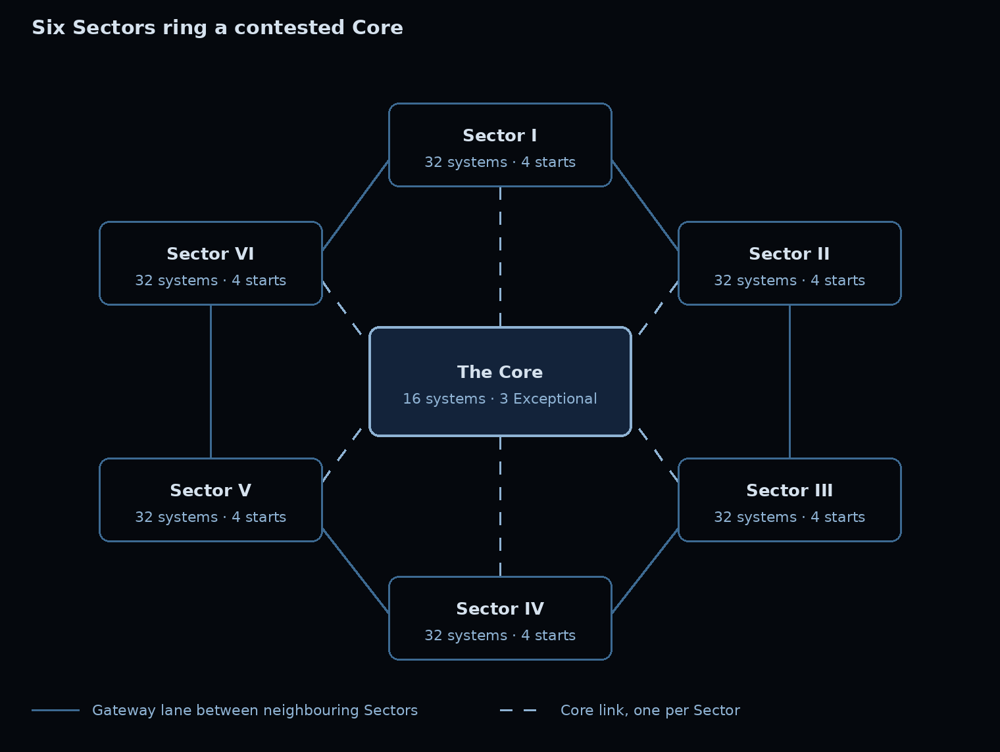

RULES OF PLAY
A grand strategy of young civilizations
Everything a civilization can do, and what it costs. The galaxy itself is on the star map, the great powers on the standings, and every civilization's lore and works in the Galactic Archives, and the news, wars and timeline in the Galactic Herald.
Part IStart here
Part IIFounding your civilization
Part IIIRunning your nation
Part VDealing with others
Part VIWar
Part VIIStanding
Part VIIISpecial cases
Part IXReference
Lore decides who you are; your choices decide what you become.
What This Game Is
In Brief A roleplaying strategy game where players found a young interstellar civilization and test it against the rest through economy, belief, technology, exploration and, if they choose, war. Your lore decides who your people are; your Nation Sheet decides what they can do.
A nation may be played every week or between long absences: the rules make room for occasional players as well as regular ones (see Occasional players). Six principles guide them:
- Lore Decides Identity; The Sheet Decides Power. Players may write anything about their culture and history. Only what appears on the Nation Sheet has a mechanical effect.
- Everyone Starts Equal. Every nation is built from the same budget, so no one is born bankrupt. The only dice at founding are those a player chooses through Random Founding.
- Coherence Is Strength. A civilization whose species, government and beliefs agree is more stable, and stability is what pays for ambition.
- Every Advantage Has A Price. Traits cost points; government types, ideology and civics each pair a bonus with a cost or restriction.
- Players Decide; The GM Resolves. Each nation's state fits on one Nation Sheet, which the GM keeps up to date. A rule that creates no real decision is cut.
- Writing Counts, Within Limits. The GM may reward good tactics and strategy, but the bonus is capped so that prose cannot overturn a real advantage in strength.
Some reference material is held privately by the GM. Players see its results in their own nation's profile.
How A Week Works
In Brief Each turn is one real-time week and five years of history. Send your orders by Sunday 18:00 (Singapore time); the results arrive on Monday at 10:00. Everything your nation holds is recorded on its Nation Sheet.
One turn runs one real-time week and represents five in-game years. Orders are due Sunday 18:00 (SGT), and the next turn opens with its results on Monday at 10:00. Questions and disputes for the GM raised by the deadline are ruled on before the turn opens; those raised later are taken up the following turn.
Each turn resolves in this order:
- Diplomacy. Treaties signed or broken this turn take effect.
- Income. Every system produces its resources, and upkeep is deducted.
- Spending. Colonization, Development, buildings, ships, research and contact strategies are paid for. What is bought this turn becomes usable next turn.
- Movement And Battle. Fleets move along lanes. Battles and invasions are rolled. Newly discovered systems are revealed.
- Covert Action. Secret operations are rolled.
Note: an operation that supports a particular order is rolled just before that order. 6. Stability. Each nation's Stability moves one point toward its target, and revolts are checked.
Orders are sent through the nation's order form (see Sending your orders). Narrative posts may be written at any time.
The Nation Sheet#
| Field | What it records |
|---|---|
| Identity | Name, species, biology type, one-paragraph summary |
| Government and ideology | Government Type, and position on each of the four axes |
| Civics | Up to four civics |
| Species | Traits and dispositions |
| Stability | Current Stability (0–10) and its target |
| Stockpile | Industry, Energy, Research, Influence and strategic resources held |
| Systems | Each system's name, class, Development, designation, feature and buildings |
| Technology | Tier in each of the four branches |
| Population | Each world's population, in billions, and the nation's per-capita GDP |
| Forces | Ships and ground formations by class, defences, and their locations |
| Designs | The nation's registered ship and ground classes, with their traits |
| Treaties | Active agreements and with whom |
Each player can view their own Nation Sheet at any time. The GM keeps it up to date, calculating income, upkeep, Fit and every modifier each turn.
See AlsoSending Your OrdersYour First TurnInformation And Secrecy
Sending Your Orders
In Brief Each turn a nation sends one order form. Routine business goes in its own box; anything aimed at a goal goes in a plan, with its own objective, orders and covert work. The last form sent before the deadline is the one that counts, and it replaces everything sent before.
Each nation submits its orders through its own order form, linked in its private orders channel. Each nation also holds a private serial number, pinned in the same channel. The link fills in both the nation and its serial, so neither is typed and no sign-in is needed; a submission whose serial does not match its nation is held for the GM. The serial should be kept private, since it is what proves orders come from their nation.
The Form, Section By Section#
- Your Nation. The nation and its serial number, already filled in by the link. Leave them as they are.
- Routine Orders. Orders that serve no particular goal: research, Development, ordinary construction. They need no explanation.
- Plans. The form asks whether the nation is running a plan this turn. Each plan has a section of its own, holding its name, its objective, its orders, and any covert operations that serve it. After each plan the form asks whether there is another, up to five.
- Closing. Covert operations that serve no plan, and questions for the GM.
A completed form looks like this:
Writing Orders#
Each order takes its own line and begins with a fixed verb:
| Verb | Use |
|---|---|
| DEVELOP, DESIGNATE, BUILD | Systems and buildings |
| SHIP, GROUND, DEFENCE | Military construction |
| RESEARCH | Technology |
| COLONIZE, CONTACT | Expansion and first contact |
| MOVE | Fleet and army movement |
| SHIFT, CIVIC, REFORM | Ideology, civics and government |
| TRANSFER, STABILITY | Resources given to other nations; buying Stability |
| FATE, BURN, BREAK | Conquered systems, archives and treaties |
Conditions. An order may depend on another happening first. Write the condition after it, beginning with IF: BUILD Garrison @ Kepler's Reach IF Kepler's Reach is founded. An order whose condition fails is not carried out, and nothing is spent on it.
Plans#
- What A Plan Is. A plan is a group of orders that serve one objective. The objective is the plan's reasoning: the GM draws on it when judging tactics, strategy and covert work, and it becomes part of the nation's recorded history.
- One Place For Each Order. Every order belongs either to the routine orders or to one plan. An order written in two places is carried out once.
- Plans Across Turns. A plan given the same name on later turns continues the same campaign, and the GM judges it as one.
- Wholly Covert Plans. A plan may have no open orders at all, only covert ones.
Covert Operations And What They Depend On#
Covert operations are written in prose, describing the plan and its target, in the Covert orders box of the plan they serve, or under Closing if they serve none. Only the GM sees them.
- Supports. If an operation depends on one of the plan's orders, copy that order into the plan's Supports box, exactly as written.
- Timing. An operation that supports an order is resolved just before that order, even ahead of the turn's usual sequence: sabotage meant to ease an invasion is rolled before the invasion's battle.
- Lapse. If the supported order fails or does not happen, as when a fleet is stopped on its way, the operation lapses and its cost is refunded.
- Everything else is resolved with the turn's other covert action, after movement and battle.
Corrections#
To change orders, send the form again. The last submission before the Sunday deadline counts, and it replaces every earlier one entirely, so each submission must include all the nation's orders, plans and covert operations, not only the change. Anything sent after 18:00 counts for the following turn. Players who want a record of what they sent should keep their own copy.
Other Points#
- Treaties are posted in the public diplomacy channel and take effect once every other party confirms with a ✅ reaction.
- No orders, no action: a nation that submits nothing by the deadline enters Caretaker status for that turn.
Your Nation At A Glance
In Brief Six things decide how a nation fares: its resources, its worlds' Development, its Stability, its population, its forces and its reputation. Learn these and the rest of the rules fall into place.
Every rule in this document touches one of these. Each is set out here in a line, and in full in its own section.
| What | What it means | Read more |
|---|---|---|
| Resources | Four that every nation produces and spends each turn.
|
The Economy |
| Systems and Development | Each system a nation holds has a Development level from 1 to 5. Development multiplies what the system produces, adds building slots and raises Fleet Capacity. | Development |
| Stability | From 0 to 10: how stable a particular civilization is. It drifts toward a target set by how well the government suits the species. High Stability adds output; low Stability risks revolt. | Stability |
| Population | The people of each world, in billions. They staff its Development, fill its armies and grow until the world is crowded. | Population |
| Forces | Ships, ground formations and defences, limited by Fleet Capacity and Army Capacity and paid for each turn in fuel and wages. | Warfare |
| Reputation | Renown for a nation's culture, Infamy for its crimes. Both are public, and both change how others may treat it. | Reputation |
Four limits shape every nation's growth:
- Administrative Capacity: how many systems a nation can govern before its Stability suffers.
- Fleet Capacity And Army Capacity: how many ships and ground formations it can maintain.
- A World's Carrying Capacity: how many people the world can support before it is overcrowded.
- A World's Capacity: how much industry the world can bear before it degrades.
See AlsoYour First TurnGlossary
Your First Turn
In Brief A worked example of a new nation's opening week: what it earns, what it can afford, and how its orders are written.
A new nation holds one system, its homeworld, at Development 3, with 10 Industry, 10 Energy, 5 Research and 10 Influence in its stockpile.
What It Earns. A starting nation with the base Administrative Capacity of 5 holds one system, four under capacity, so consolidation adds 20% to its homeworld's output: it earns 7.2 Industry, 7.2 Energy, 3.6 Research and 7.2 Influence, and pays its upkeep: 2 Energy in fuel for its Escorts, and 3 Marks in wages (2 for the Escorts' crews, 1 for its Infantry), here paid from Industry.
What It Can Afford. After income and upkeep it holds 14.2 Industry, 15.2 Energy, 8.6 Research and 17.2 Influence. For example:
- Raise the homeworld to Development 4: 12 Industry.
- Found a colony on an unclaimed system one lane away: 5 Influence and 5 Energy.
That leaves 2.2 Industry, 10.2 Energy, 8.6 Research and 12.2 Influence to bank for the next turn, with Research saving toward the 20 that the second tier of a technology branch costs.
The orders, as written in the order form:
The colony produces from the following turn, and takes the consolidation bonus down to 15%.
From here, the rules follow the order in which a player needs them: founding a civilization, running it, the galaxy beyond it, dealing with others, war, and the standing a nation earns.
Founding A Civilization
In Brief A player designs a civilization on joining: a young species on a single homeworld, built from the same budget as everyone else. The player submits a Founding Charter, and a Civilization Dossier if they wish, for the GM's approval.
Every nation begins as a young species that has only just achieved FTL travel, on a single homeworld with no colonies. Players design their civilization on joining, within the limits below, and submit a Founding Charter for GM approval.
The Limits Of Plausibility#
- One World, No Empire. No prior colonies, no subject species, no inherited precursor fleets or ancient servants.
- Tier 1 Technology Only. Lore may not describe technology beyond the starting tier.
- Biology. Organic, Lithoid, Synthetic or Cybernetic. Psionics require a species at least 50% organic.
- Banned Outright:
- multi-dimensional or multi-universal travel;
- weapons or projectiles that travel or deal damage at FTL speed, except a ship built for an expendable strike;
- biological weapons or weapons that attack a species' biology;
- psionics that create matter from nothing, teleport across interplanetary range or move objects over 50 m.
Note: a species' own natural weapons, such as venom, claws or an acid spray, are not biological weapons. - Permitted Psionics: telekinesis, telepathy, astral projection and scrying.
Note: psionics require the Psionic Tradition civic. - History and culture are free, provided they give no advantage beyond the sheet.
The Founding Charter#
Each player submits:
- the nation's name;
- species and biology type;
- species traits and dispositions;
- Government Type;
- ideology on all four axes;
- two civics;
- an optional fiscal code (see The treasury);
- a synopsis of up to 300 words, shown publicly.
A civilization designed rather than rolled also submits a Civilization Dossier: a full account of the species, its world, history, government, beliefs, society and culture, in as much depth as the player wishes. The Dossier has no effect on output, but its cultural sections earn Renown, and it is the record the GM draws on for coherence, judgement and narration. The GM approves or returns the Charter within one week, and sends the player their species profile and Fit.
Coherence#
A civilization's traits, government, ideology and civics must fit together, and the Charter's lore must explain how. Unusual combinations are allowed; unexplained ones are not.
- What Needs Explaining. Any combination that produces a Fit clash, and any other combination the GM judges to contradict itself. The GM tells the player which ones.
- The Explanation. Up to 100 words per combination, explaining why it holds together. A Fragile people might be Martial because it fights through machines; an Individualist people might accept a crown because its monarch is elected and bound by oath.
- Approval. The GM accepts an explanation that is consistent with the rest of the Charter. A combination with no accepted explanation must be changed.
- Explanation Is Not Exemption. An accepted explanation makes a combination legal; its Fit clash still applies.
- During Play. A change that creates a new clash needs the same explanation, posted in character before it takes effect.
A player whose Civilization Dossier already explains a combination may cite the section instead of writing a separate explanation. The GM accepts the citation if the Dossier bears it out.
Species Traits#
Traits describe what a species is. The GM determines the species' profile of bonuses and penalties from its combination of traits. The same combination always gives the same result.
- Every species has 4 trait points. Positive traits cost 1 or 2; mixed traits cost 0; negative traits refund 1. Unspent points are lost.
- A species may hold at most four traits with a positive cost and three with a negative cost, and never a trait with its listed opposite.
- Psionic-Resistant is a special trait with a flat cost of 1 and no domains.
The full list of traits, with their costs and opposites, is under Reference tables.
Signature Adaptation#
A species may have one signature adaptation: a feature of its body that no trait describes, such as venom, an acid spray, a chameleon skin, a second heart or a hide that shrugs off flame. It costs 1 trait point. The player describes it freely in the Charter and Dossier, and the GM matches it to one effect from the table below. Every adaptation also has a matching drawback, which the GM chooses from the second table to fit the description: a people that sprays acid may be feared; a cold-blooded one may falter in the cold.
| Effect | What it does |
|---|---|
| Predator | +1 in ground battle, attacking and defending |
| Unseen | +1 to covert actions, acting and defending |
| Kindred | +1 to contact strategies with natives |
| Unbroken | One kind of environmental event, named at founding, has no effect on its worlds |
| Rooted | Capacity +2 on one environment type, named at founding |
| Born to it | In battles where the adaptation plainly applies, the GM's tactics modifier is never below +1 |
| Drawback | What it does |
|---|---|
| Feared | −1 to contact strategies with natives |
| Conspicuous | −1 to covert defence |
| Ill-suited | Capacity −2 on one environment type, named at founding |
| Vulnerable | One kind of environmental event, named at founding, strikes its worlds twice as hard |
| Out of its element | −1 in ground battle on one environment type, named at founding |
An effect and its drawback must not cancel each other: a Kindred people cannot be Feared. A species with a host (see Necrophages) may give the adaptation to either species, but not both.
Social Dispositions#
A species may take one disposition from each pair, or neither. Dispositions cost no points. They describe what kind of state suits the species, which counts toward Fit.
| Pair | Disposition | Description | Effect |
|---|---|---|---|
| Self and group | Individualist | Solitary by nature; resists central direction | Colonization costs −20%; −1 Administrative Capacity |
| Self and group | Collectivist | Communal by nature; accepts common direction | +1 Administrative Capacity; ideology shifts and civic replacements cost double. Required for Collective government |
| The beyond | Reverent | Innately senses the numinous and seeks meaning beyond the material | Fit only |
| The beyond | Grounded | Perceives no beyond; finds meaning in the world as it is | Fit only |
Neither Reverent nor Grounded says anything about reason. A Reverent species may study creation all the harder for its sense of the sacred, and a Grounded one may be as superstitious as any.
Habitat#
Most species rose on the dry surface of their world; some did not. At founding, a species declares its habitat: Surface, Aquatic or Subterranean. Habitat costs no trait points. Surface carries no modifiers; the other two change what a nation settles easily and what it does well, and they apply from the first turn.
| Habitat | Advantages | Drawbacks |
|---|---|---|
| Aquatic | Energy +5%, drawn from tides, vents and the sea itself. Oceanic worlds: Development cap +1. | Every other world: colony cost doubled, Development cap −1. Industry −10% until Industry Tier 3, since smelting under water is no small matter. |
| Subterranean | +1 defence on every world it holds. Extractors cost half. Barren, Frozen, Arid, Volcanic and Toxic worlds: colony cost −25%. Immune to crop failure and to events that drive a population from the surface. | Garden and Oceanic worlds: colony cost +25%. Research −10% until Society Tier 3, for a people that came late to the sky. |
An Aquatic species' homeworld is always Oceanic, and the map places at least one further Oceanic world within its early reach. A Development cap can never fall below 1 or rise above 5, whatever the habitat.
Starting Position#
Every nation starts with the same assets:
- A homeworld at Development 3, designated Capital, with a Shipyard
- Stockpile: 10 Industry, 10 Energy, 5 Research, 10 Influence
- 5 Escorts, 2 Transports and 4 Infantry at the homeworld
- A homeworld population calculated from its world, habitat, traits, civics and ideology (see Population)
- Tier 1 in all four technology branches
- Stability at its target
Government, Ideology And Civics
In Brief Three layers define a state: one Government Type (who rules), a position on four ideology axes (what it believes) and up to four civics (how it behaves). Each pairs a bonus with a cost, and together with the species they set the nation's Stability target.
A nation's character has three layers: one Government Type (who holds power), a position on four ideology axes (what the state believes) and up to four civics (how it behaves). Together with the species, they set its Stability target.
Government Type#
Every nation chooses exactly one Government Type, and names its government freely: a Holy Kingdom and a Solar Throne may both be Imperial.
| Type | Bonus | Drawback | Not allowed with |
|---|---|---|---|
| Democratic | +10% Influence; may replace one civic at no cost every 4 turns (an election) | Declaring an offensive war costs 5 Influence | Fervent Order |
| Oligarchic | Civic replacement costs −25%; +1 trade agreement slot | Influence −10% | None |
| Dictatorial | +1 Administrative Capacity; ideology shifts cost −25% | Covert actions against you +1 | Fervent Liberty |
| Imperial | +1 Stability; +1 Administrative Capacity | Succession: −2 Stability whenever the ruler changes | Fervent Liberty |
| Collective | Stability target fixed at 6, though temporary effects still apply; +2 Administrative Capacity | No ideology axes; Influence cannot buy Stability | Collectivist species only |
Imperial succession follows the species' lifespan: the ruler changes every 6 turns for a Short-lived species, every 10 turns for most, and every 20 for a Long-lived one. A player may also declare an earlier change, such as an abdication or a coup, at the same cost.
Reform. Changing Government Type costs 30 Influence and 2 Stability. Collapse imposes a new government without the cost (see Stability).
Ideology#
Each nation takes a position on four axes: Fervent, Leaning or Neutral toward either pole. A Leaning position gives the bonus below, and breaking its taboo costs 2 Stability. A Fervent position doubles the bonus, and its taboo costs 3. Neutral gives neither. A nation may hold at most two Fervent positions. Shifting one step on an axis costs 15 Influence and 1 Stability, once per turn.
The axes measure separate questions: where authority lies, whether the state answers to a creed, how readily it uses force, and whether it turns toward the galaxy or away from it. No pole implies anything about the others.
| Pole | Bonus (Leaning) | Taboo |
|---|---|---|
| Order | +1 Administrative Capacity | Ceding a system in a peace treaty |
| Liberty | +10% Research | Declaring war without a casus belli |
| Sacred | +1 Stability | Breaking a treaty |
| Secular | Replacing a civic costs half; +10% Industry | Posing as gods (Divine Mandate, Godhead form) |
| Martial | +20% Fleet Capacity | Accepting a white peace or a defeat |
| Pacific | Development costs −10% | Declaring an offensive war |
| Outward | +1 trade agreement slot | Withdrawing: ending a trade agreement or revoking passage rights |
| Inward | +1 defending your own systems; +1 against covert actions | Opening: granting passage rights to foreign fleets |
What each position means for a civilization:
- Order. Authority flows downward from the state, and hierarchy, stability and continuity outrank individual preference. It trusts institutions over individuals, and does not give up what it holds.
- Liberty. Authority flows upward from the governed, and individuals, factions and ideas compete openly. It will not go to war without a reason it can defend to its own people.
- Sacred. The state is bound to a creed or transcendent purpose, and its legitimacy rests on keeping faith with it. This says nothing against reason: its oaths are sworn before something beyond itself.
- Secular. The state answers to no creed; its legitimacy rests on law, consent or results. It treats institutions as tools, and will not use faith as an instrument of rule.
- Martial. Force is an honoured and ordinary instrument of the state. It says nothing about where that force is aimed: a Martial state may guard closed borders as readily as it conquers. It does not accept defeat lightly.
- Pacific. Force is a last resort, and energy goes into building. It defends itself without hesitation but never starts a war, and may still spread far by settlement, trade or persuasion.
- Outward. The civilization looks to the galaxy: it settles, trades, travels and seeks contact, and does not withdraw from the agreements it makes.
- Inward. The civilization looks to itself, guarding its borders, culture and secrets. It may trade and ally on its own terms, but will not let foreign fleets pass through its space.
- Neutral. The question does not define the civilization.
Civics#
A nation holds two civics at founding, a third at Society Tier 3 and a fourth at Society Tier 5. Replacing a civic costs 20 Influence and 1 Stability.
The full list of civics, with their bonuses, drawbacks and requirements, is under Reference tables.
See AlsoStabilityFitThe Fiscal Code
Stability
In Brief Stability, from 0 to 10, measures how stable a civilization is. Coherent nations hold more of it; ambitious policies spend it. Below 4, output falls and worlds risk revolt; at 0 the state collapses.
Stability runs from 0 to 10 and measures how stable a civilization is. It is also spent: coherent civilizations hold more of it, and ambitious policies use it up.
- Two Kinds Of Change. Permanent effects (government, ideology, civics, species, Fit, buildings) change the Stability target. One-off events (spending, war results, covert action) change current Stability. Every "+1 Stability" in a table above is a permanent effect on the target.
- The Target. A nation begins at its target, and each turn its Stability moves one point toward it.
| Stability Target = | 4 | + Permanent Effects | ± Temporary Effects | At Most 10 |
|---|---|---|---|---|
| What each part adds | The base every nation starts with |
|
|
The target never rises above 10 |
- Temporary effects, such as exceeding Administrative Capacity or war appetite, raise or lower the target while they last.
| Stability | Condition | Effect |
|---|---|---|
| 9–10 | Flourishing | +10% to all output |
| 6–8 | Settled | +5% to all output |
| 4–5 | Ordinary | No effect |
| 2–3 | Unrest | −25% to all output; no colonization; revolts |
| 1 | Crisis | −50% to all output; no wars of choice; revolts spread |
| 0 | Collapse | The state falls |
Revolt. When Stability first falls to Unrest, the GM chooses one system to rise: the most recently acquired, or otherwise the one with the lowest Development. While Stability stays at Unrest, another rises every 3 turns; at Crisis, one rises every turn. A system in revolt produces nothing, and breaks away as an independent minor power if not defeated by ground formations within two turns.
Collapse. At 0, the civilization ends as a state. Every system in revolt breaks away and all treaties are void. Systems beyond its Administrative Capacity break away too, the most recently acquired first. The player keeps the capital and the loyal systems that remain, and founds from them a successor state with a new Government Type, free of the Reform cost, at Stability 3.
Elimination. A nation that loses its last system, or cannot pay reparations it owes, is eliminated: the state has failed, whether through its player or its circumstances. The player may register a new civilization, and is strongly encouraged first to examine what succeeded and what failed in the old one.
| Action | Stability cost |
|---|---|
| Declaring an offensive war | 1 |
| Declaring war without a casus belli | 2 more |
| Shifting an ideology position | 1 |
| Replacing a civic | 1 |
| Annexing or integrating a system | 1 (none with Federal Charter) |
| A Reform of Government Type | 2 |
| Breaking a taboo | 2 (Leaning) or 3 (Fervent) |
| Breaking a treaty | 2, plus any civic or ideology additions |
| Failing to pay upkeep | 1 |
Winning a war gives +1 and losing one costs 2. A nation may also spend 5 Influence for +1 Stability, once per turn, on top of its natural recovery, but bought Stability never raises it above its target.
Fit#
A state that suits its people's nature is more stable than one that strains against it. The GM compares the species' traits, dispositions and domain strengths with its government, ideology and civics. Each match adds +1 to the Stability target and each clash −1, with the total capped at ±2. Each player is told their Fit and the matches and clashes behind it.
See AlsoAdministrative CapacityGovernment, Ideology And CivicsWar Appetite
The Economy
In Brief A nation's worlds produce four resources: Industry, Energy, Research and Influence. It grows by raising Development, adding buildings and founding colonies, until Administrative Capacity says it holds more than it can govern.
The economy runs on four resources, produced by specialized systems and grown through Development, buildings and colonization. Unspent resources carry over between turns without limit. Output is calculated to one decimal place and stockpiles keep the fraction; every cost is a whole number. Reductions from all sources together never lower a cost by more than 50%.
| Resource | Spent on |
|---|---|
| Industry | Development, buildings, ships, ground forces, defences, Megaprojects |
| Energy | Colonization, upkeep of forces |
| Research | Technology |
| Influence | Colonization, Stability, ideology, civics, diplomacy, contact strategies, covert action |
Designations#
Every system holds one designation, which sets what it produces per Development level. Changing a designation costs that system one turn of output.
| Designation | Output per Development level | Notes |
|---|---|---|
| Capital | 2 Industry, 2 Energy, 1 Research, 2 Influence | Homeworld only; cannot be changed |
| Forge | 2 Industry | |
| Generator | 2 Energy | |
| Academy | 2 Research | |
| Civic | 2 Influence | |
| Trade Hub | 1 Energy, 1 Influence | Holding any Trade Hub gives +1 trade agreement slot |
| Fortress | 1 Industry | +2 to defend this system in battle |
A starting homeworld produces 6 Industry, 6 Energy, 3 Research and 6 Influence each turn before modifiers.
Development#
Raising a system to Development level N costs 3 × N Industry: 6 for level 2, 9 for 3, 12 for 4 and 15 for 5. A system may rise at most one level per turn, and never above its class cap.
Buildings#
Buildings give a world local character: its designation sets what it mainly produces, and its buildings what it is known for. A building costs Industry, is completed at the start of the next turn, and may appear only once in a system.
Slots. One per habitable planet, plus one more at Development 4 and another at Development 5.
Note: a Barren system has one orbital slot.
| Building | Cost | Requires | Effect |
|---|---|---|---|
| Shipyard | 10 Industry | None | Ships may be built only at systems with a Shipyard. Battleships and Dreadnoughts need one at Development 3 or more |
| Foundry | 12 Industry | None | Industry: +1 at Development 1–2, +2 at 3–4, +3 at 5 |
| Power Plant | 12 Industry | None | Energy: +1, +2 or +3 by Development |
| Research Institute | 12 Industry | None | Research: +1, +2 or +3 by Development |
| Civic Hall | 12 Industry | None | Influence: +1, +2 or +3 by Development |
| Extractor | 10 Industry | A strategic deposit | +1 unit of that resource per turn |
| Garrison | 10 Industry | None | The system cannot revolt while Stability is 2 or more; +1 in ground battles there |
| Sensor Array | 12 Industry | Logistics Tier 3 | Sight extends to 2 lanes around the system |
| Trade Exchange | 15 Industry | A Trade Hub designation | +1 trade agreement slot; counts once per nation |
| Monument | 15 Industry, 2 Lattice crystals | Society Tier 4 | +1 Stability target; counts once per nation |
| Conduit | 15 Industry | Collective government; Development 3 | +1 Administrative Capacity, to at most half the nation's Society tier, rounded down; holds nearby systems against revolt (see below) |
| Military College | 15 Industry | Military Tier 2; takes 2 turns | +1 in ground battles; unlocks Special Forces; counts once per nation |
| Habitat Station | 12 Industry | Society Tier 2 | Carrying capacity +1.5 billion; may take a Barren system's orbital slot |
| Arcology | 20 Industry, 1 Lattice crystals | Industry Tier 4; Development 3; takes 2 turns | Carrying capacity +5 billion |
Sensor Arrays. At the end of each turn's movement, the GM reports to the owner every foreign force that moved within range during the turn, by category, with the lanes it used. Arrays see movement, not buildings, defences or designs. Allies share an array's sight only by treaty.
Conduits. A Collective's will reaches its worlds through Conduits, nodes of the common mind or communion. Each gives +1 Administrative Capacity, to a maximum of half the nation's Society tier, rounded down: one at Society Tier 2 or 3, two at Tier 4 or 5, three at Tier 6. While the nation's Stability is 2 or more, no system within 2 lanes of a Conduit can revolt. A Conduit in revolt or under occupation counts for nothing, and when a Conduit's system is occupied, razed or breaks away, the nation loses 2 current Stability at once: the Collective feels the severed node.
Colonization#
- A new colony costs 5 Influence and 5 Energy, and starts at Development 1. Its first 0.3 billion settlers move there from the nation's other worlds.
- The target must be unclaimed and one lane from a system you hold.
Note: from Logistics Tier 4, the target may be two lanes away.
- A colony founded earlier in the same turn counts as held. A farther target needs an expedition.
- A nation may found any number of colonies per turn if it can pay for them. A new colony produces from the following turn.
- A nation in Unrest or worse when its orders are resolved may not colonize that turn, even if it buys Stability in the same orders; it must wait for the next turn.
- Expeditions. A nation may found a colony beyond its reach by sending an expedition from any system it holds. It pays the colony's cost when the expedition sets out, and the expedition travels along lanes at the nation's jump range, like a fleet: five jumps away takes two turns at the base range of 3. The colony is founded on arrival, at Development 1, and produces from the following turn. Sending an expedition is a colonization order, so a nation in Unrest may not send one.
- An expedition has no Fleet Power. A fleet at war with its nation, or one blockading a system on its route, may stop and destroy it there. If its target has been claimed by the time it arrives, it may go on to another unclaimed system within its remaining range, or turn back; its cost is not refunded.
- A colony founded this way need not connect to the rest of the nation's territory. One that does not is an exclave, and its owner must hold the lanes to it as best it can.
Administrative Capacity#
Colonization has no fixed limit. Administrative Capacity, the number of systems a nation can govern without strain, limits it instead.
| Administrative Capacity = | 5 | + Government | + Ideology | + Species | + Society Technology |
|---|---|---|---|---|---|
| What each part adds | The base every nation starts with |
|
Order: +1 if Leaning, +2 if Fervent |
|
+1 per tier above 1 |
While a nation holds more systems than its capacity, its Stability target falls by 1 for every 2 systems over, rounded up, with no limit: 1 for one or two systems over, 2 for three or four, 3 for five or six, and so on.
Playing Tall#
A nation that stays small and deep is rewarded in two ways, and its developed worlds hold more and stronger buildings:
- Consolidation. +5% to all output for each unused point of Administrative Capacity, to a maximum of +25%. A new nation holds one system with capacity to spare, so it begins with the bonus near its height: a founding impetus that shrinks by 5% with each system it adds, and that a nation which stays compact keeps.
- Research Sprawl. Technology costs rise 5% for each system held beyond the fifth, so compact nations advance faster.
Wide nations keep the larger territory and the higher Fleet Capacity. Tall nations are richer per system, more stable and quicker in technology.
Upkeep#
Forces cost fuel and wages each turn. Fuel is paid in Energy. Wages are counted in Stellar Marks and paid in any mix of Industry, Energy and Influence; a nation that names no mix pays from its largest stockpiles first.
| Force | Fuel (Energy) | Wages (Marks) |
|---|---|---|
| Ships | 1 per 4 capacity points, rounded up | 1 per 4 capacity points, rounded up |
| Dreadnoughts | Also 1 Volatile isotope each | |
| Ground formations | None | Per formation (see Ground Formations) |
| Static Defence | None | 1 per 4 points |
| Major installations | Some draw Energy while in use (see Defences) | As listed |
| Transports | None | None |
A nation that cannot pay its fuel disbands ships, smallest first, until it can. One that cannot pay its wages disbands ground formations, then ships, until it can. Either way it loses 1 Stability.
Note: under Citizen Militia, ground formations draw no wages.
See AlsoThe TreasuryPopulationWorlds And Their TollDiplomacy And Trade
Population
In Brief Every world holds a population, in billions. People staff a world's Development, fill its armies and grow until the world is crowded; war, atrocity and migration take them away or bring them in.
Carrying Capacity#
A world's carrying capacity is the number of people it can support without crowding.
| Carrying Capacity = | Environment | + Planets | × Habitat | × Condition | × Society Technology | + Structures |
|---|---|---|---|---|---|---|
| What each part adds |
|
+1 for each habitable planet beyond the first |
|
|
+5% per tier above 1 |
|
Starting Population. A homeworld begins at 80% of its carrying capacity, adjusted by its people: Collective or Collectivist ×1.1, Long-lived ×0.85, and as the species profile sets. Typical homeworlds begin with 4 to 11 billion people.
Growth And Overcrowding#
- Growth. A population grows by 12% a turn, slowing as it approaches 120% of its world's carrying capacity. Long-lived peoples grow ×0.7, Collective or Collectivist peoples ×1.2, Sacred states ×1.1, and a nation in Unrest grows at half the rate.
- Overcrowding. A world above 105% of its carrying capacity is overcrowded: its output falls 5%, it gains 0.5 Degradation a turn, and every three overcrowded worlds lower the nation's Stability target by 1, to at most −2.
- The Remedies. Found colonies, build Habitat Stations and Arcologies, raise an Orbital Ring, or hold births down by policy (see Workforce Policies).
Workforce#
Each Development level needs people to run it.
| Workforce Needed = | 0.25 × Development² | × Automation |
|---|---|---|
| What each part adds | Billions of people: 0.25 at Development 1, 1 at 2, 2.25 at 3, 4 at 4, 6.25 at 5 | −10% per Industry tier above 1, and as Workforce Policies, Cybernetic biology and the Synthetic Directive reduce it; at least a quarter of the workforce is always needed |
- Understaffed Worlds. A world with fewer people than its workforce produces between 50% and 100% of its output, in proportion to its staffing.
- Development Waits For People. A world may not rise a Development level until it holds at least half the workforce that level needs.
Settlement And Migration#
- Within A Nation. Each turn, 3% of the people of crowded worlds move to the nation's emptier worlds.
- Between Nations. At peace, people drift from a poorer nation toward a richer neighbour within 3 lanes whose per-capita GDP is at least 30% higher: 0.2% of the poorer nation's population a turn. The receiving nation's immigration policy decides how many it admits.
- Refugees. When a world is occupied, 5% of its people are killed and 10% flee. Half the refugees move to their own nation's other worlds; the rest flee to neighbours within 3 lanes, who admit them according to their refugee policy. A host that takes in more than 3% of its own population loses 1 Stability for two turns.
- Policies And Events. Each nation sets standing immigration and refugee policies in its fiscal code: open, selective or closed. Flows too large or too charged for policy alone arrive as events, which the nation answers in its orders.
Per-Capita GDP#
A nation's GDP divided by its population is its per-capita GDP, in Marks per billion. A nation at 1.5 times the galactic median or more gains +1 Stability target; one at 0.6 times or less loses 1.
Workforce Policies#
A nation may meet its need for people by other means than growth. Each is a line in its fiscal code, at Light, Moderate or Heavy intensity.
| Policy | Light | Moderate | Heavy | Cost |
|---|---|---|---|---|
| Automation | Workforce −20%; Industry and Energy +5% | −35%; +10% | −50%; +15% | Stability, for workers made idle (below) |
| Population Control | Growth −15%; populations settle 15% lower | −30%; 30% lower | −45%; 45% lower |
|
| Family Policy | Growth +15% | +30% | +45% |
|
| Labour Admission | Guest workers: 0.2% of each peaceful neighbour's population a turn | 0.4% | 0.6% |
|
| Education | Workforce −10%; Research +5% | −20%; +10% | −30%; +15% |
|
| Genetic Programme | Workforce −10%; hostile worlds' capacity +10% | −20%; +20% | −30%; +30% |
|
| Cloning Vats | 0.1 billion people a turn | 0.2 billion | 0.3 billion | 50 Industry per billion; Stability −1 for a Sacred people |
| Forced Labour | Conquered and joined worlds need half the workforce | As Light | As Light |
|
- Displacement. Automation costs Stability only for the workers it makes idle. Half a nation's population is of working age; the Stability cost is 4 × the share of that labour the Automation line itself leaves idle × 0.5, 1 or 1.5 by intensity, at most twice that figure. A nation short of workers pays nothing.
- Synthetic Peoples are built, not born: their population grows by manufacture at the Cloning Vats price instead of by births.
- Cybernetic Peoples need a quarter less workforce, and so does a nation under the Synthetic Directive.
- Thinking Machines. A heavily automated nation may face events: machine minds seeking rights, a rogue intelligence, or sabotage through its networks.
Note: a Genetic Programme is unavailable under the Synthetic Directive, and earns Infamy if it is coerced.
See AlsoWorkforce PoliciesThe Fiscal CodeWorlds And Their TollThe Human Cost Of War
The Treasury
In Brief An economy is larger than its state: GDP is what a nation produces, revenue what the state collects. The fiscal code sets the line between them, and a nation may borrow beyond its stockpiles.
A civilization's economy is larger than its state. Gross domestic product (GDP) is everything a nation produces in a turn; revenue is the share of it the state collects and can spend. The difference stays with the population, where it keeps people content and makes growth cheaper. A nation's fiscal code decides where that line falls.
GDP And The Stellar Mark#
The galaxy keeps its accounts in a common unit, the Stellar Mark (SM). It is a measure of value, not a resource: nobody holds Marks. A state collects about a quarter of what its economy produces. A nation's output for the turn, including strategic resource income and priced in Marks, is its revenue; its GDP is four times that output, measured before the revenue effect of its fiscal code.
| Resource | Price |
|---|---|
| Industry, Energy, Influence | 1 SM a unit |
| Research | 2 SM a unit |
| Each strategic resource | 10 SM a unit |
The starting nation in the worked first turn produces 7.2 Industry, 7.2 Energy, 3.6 Research and 7.2 Influence, a revenue of 28.8 SM and a GDP of 115.2 SM. Because GDP is measured before tax, a nation that taxes lightly does not look poorer for it, and one that taxes heavily does not look richer.
Loans, interest, reparations and prices may be written in Marks and settled in any mix of resources at these prices. The GM may revise the prices between eras and announces any change a turn in advance.
The Fiscal Code#
Each nation sets out its taxes and subsidies in a fiscal code, written in its own words in the Founding Charter: "a progressive income tax of up to 20%", "subsidies for small enterprises". The GM matches each line to an instrument in its catalogue and gives it an intensity: Light, Moderate or Heavy. The rates a player writes are flavour and read only to judge intensity; the instrument and its intensity decide the effect. A nation with no fiscal code collects its full output, as before.
Each instrument moves one or more of these:
- Revenue: a percentage of all four resources' output, applied with the nation's other modifiers.
- One resource's output, by percentage.
- Stability Target. Fiscal effects are added together and the total rounded to the nearest whole number.
- Costs: Development, colonies, ships or technology, by percentage.
- Credit: steps on the nation's credit score (see Debt and credit).
Five limits apply:
- Revenue Cap. A fiscal code's total revenue effect stays between −20% and +20%.
- Diminishing Returns. Within each category, the instrument that raises the most revenue counts in full and each further one counts for half. Taxing income three ways does not triple the yield.
- Reform. A nation's first fiscal code takes effect at founding at no cost. Afterwards, each order that adds, removes or changes the intensity of a line costs 1 current Stability (at most 3 a turn) and takes effect from the next turn. A change of government or civic that puts a line out of bounds (see Plausibility) is a policy change: the line falls to the highest intensity still permitted, at the usual Reform cost.
- Plausibility. An instrument must suit the state that levies it. Some require a particular ideology or civic, and some governments cannot run an instrument above a given intensity; the GM says which.
- Tax Burden. Every 5% of net revenue a code raises costs 0.5 Stability target, after subsidies are counted, so a light hand on many taxes is no longer free. The burden is added to the code's other Stability effects before rounding, and a half rounds away from zero.
The GM keeps the catalogue of instruments. A player may write any tax, subsidy or economic policy a state could plausibly hold; the GM tells the player what it does before approval, and the Nation Sheet shows its effect every turn. The same policy can land differently on different governments and civics. A Collective's total revenue effect stays between −10% and +10%. A tariff is public: each partner is told the rate it faces, and may answer in kind.
The GM also weighs a fiscal code for Fit: a frugal, collectivist species may take well to heavy public services, and a fiercely individualist one may resent them.
Debt And Credit#
A nation may spend beyond its stockpiles by borrowing, from its own people or from another nation. Every debt is written in Marks and repaid in equal instalments of principal and interest each turn, in any mix of resources at the Mark prices. Instalments are taken with upkeep; a nation that names no mix pays from its largest stockpiles first.
Bonds. A nation may sell bonds to its own population: it chooses an amount, a term of 2 to 10 turns and the resources it wants, and pays the bond rate its credit rating sets. It may issue at most one turn's revenue in new bonds each turn, may not borrow if its total debt would exceed three times its revenue, and may not borrow at all while its rating stands at Default.
Loans. Nations may lend to each other on any terms they agree: amount, interest, term, and collateral such as a system, a trade agreement or passage rights. A loan is a treaty, and its instalments pass from borrower to lender automatically each turn. A lender may forgive a debt at any time.
Investment. An investor may pay part or all of the cost of Development or a building in another nation's system. In return it receives a share of that system's output for a fixed number of turns, 25% for 10 turns unless the treaty says otherwise. Seizing the investment early breaks the treaty.
Arrears And Default. A nation that cannot meet an instalment falls into arrears and loses 1 current Stability for each turn it stays there. Two missed instalments in a row, or an order to stop paying, is a default. Defaulting on a loan or an investment breaks the treaty, with the usual Stability cost; the creditor gains a casus belli; and the defaulter's credit score falls by 2 for 10 turns.
Credit Rating#
Each turn, every nation's credit score starts at 3 and is adjusted:
- Debt at most one turn's revenue +1; more than twice its revenue −1; more than three times −2.
- Stability 7 or higher +1; 3 or lower −1.
- A default in the last 10 turns −2.
- Some fiscal policies, as the GM tells the nation.
| Score | Rating | Bond rate per turn |
|---|---|---|
| 5 or more | Sovereign | 2% |
| 4 | Prime | 3% |
| 3 | Sound | 5% |
| 2 | Speculative | 8% |
| 1 | Distressed | 12% |
| 0 or less | Default | No new bonds |
Ratings are public. A nation with a Sovereign or Prime rating borrows cheaply and is trusted as a lender.
Worlds And Their Toll
In Brief Industry degrades worlds. Strain beyond a world's Capacity becomes Degradation, which cuts output, lowers Stability and causes environmental events. Hospitable worlds are the most fragile, and worlds that can recover heal slowly once the pressure lifts.
Environments#
Every system's main world has an environment, learned when the system is discovered. A homeworld's environment is the one its Charter and Dossier describe. Hospitable worlds are the most fragile; worlds that are already hostile have little left to lose.
| Environment | Capacity | Recovers | Character |
|---|---|---|---|
| Garden | 4 | Yes | Temperate and alive; the rarest and most fragile |
| Oceanic | 4 | Yes | Mostly water, with a living sea |
| Arid | 3 | Yes | Desert and scrub; thin soils |
| Frozen | 3 | Yes | Ice and tundra |
| Barren | 6 | No | Airless or nearly so; rock and dust |
| Volcanic | 6 | No | Molten and restless; already hell |
| Toxic | 6 | No | Poisoned air or seas, natural or made |
Each Society tier above 1 adds 1 to the Capacity of every world a nation holds. A world that recovers sheds 1 Degradation each turn its Strain stays within its Capacity.
Strain#
| Source | Strain |
|---|---|
| Forge or Generator designation | 2 per Development level |
| Trade Hub or Fortress designation | 1 per Development level |
| Academy or Civic designation | None |
| Foundry, Power Plant or Shipyard | 1 each |
| Extractor | 2 |
| Capital designation | ½ per Development level |
Some fiscal policies reduce Strain across the nation. A Forge at Development 3 with a Foundry produces 7 Strain. On a Garden world it adds 3 Degradation a turn and is Strained within four turns; on a Volcanic world it adds 1.
Condition#
| Degradation | Condition | Effect in that system |
|---|---|---|
| 0–9 | Clean | None |
| 10–24 | Strained | Output −10% |
| 25–49 | Degraded | Output −25%; Development cap −1; environmental events on a 1–2 |
| 50 or more | Ruined | Output −50%; Development cap −2; environmental events on a 1–3; the nation's Stability target −1 |
A world already above its reduced Development cap loses the excess levels when its Condition worsens.
Ruined worlds cost at most 2 Stability target between them. A ruined Garden, Oceanic, Arid or Frozen world becomes Toxic.
Remediation. An order may spend 2 Industry for each point of Degradation removed from a system, up to 10 points a turn.
Environmental Events#
Each turn, every Degraded or Ruined system that is not a sacrifice world rolls a d6, and on the numbers listed above an event strikes it. The GM rolls again for the event. The nation answers in its next orders: it pays the price, or accepts the consequence.
| d6 | Event | Pay | Or accept |
|---|---|---|---|
| 1 | Toxic bloom | 5 Industry | The system produces nothing next turn |
| 2 | Crop failure | 4 Energy for imports | −1 current Stability |
| 3 | Flight from the cities | 3 Influence | The system loses 1 Development |
| 4 | Protest movement | 3 Influence | −1 current Stability; −2 for a Reverent species or a Sacred state |
| 5 | Outbreak | 4 Research | The system's output is halved next turn |
| 6 | Collapse of a biosphere | None | Degradation +5 |
Sacrifice Worlds#
A nation may declare any system other than its capital a sacrifice world: a world given over to industry, whatever becomes of it.
- Degradation never reduces its Industry or Energy, and it rolls no environmental events. Its Research and Influence still suffer.
- It still degrades, and still loses Development cap as its Condition worsens.
Note: its ruin costs no Stability. - If any of the nation's sacrifice worlds is a Garden or Oceanic world, or carries complex or intelligent life, the Stability target falls by 1, or by 2 for a Reverent species. - Sacrificing a world inhabited by natives is an atrocity (see Infamy). - The declaration stands until the world has been remediated back to Clean; only then may it be revoked.
A Volcanic, Barren or Toxic forge world can therefore be worked to exhaustion at no cost in Stability.
See AlsoDesignationsBuildingsTechnology
Technology
In Brief Four branches (Military, Industry, Society and Logistics), each of six tiers. Costs rise steeply within a branch, so specializing is cheap and excelling at everything is not.
| Technology Cost = | 10 × T × (T − 1) | × Sprawl | + Strategic Resources |
|---|---|---|---|
| What each part adds | Research for Tier T: 20 for Tier 2, 60 for Tier 3, 120 for Tier 4, 200 for Tier 5, 300 for Tier 6 | +5% for each system held beyond the fifth |
|
A nation may advance each branch by one tier per turn, in any number of branches. Costs rise 5% for each system held beyond the fifth, and Tiers 5 and 6 also consume strategic resources.
| Tier | Cost (Research) | Cumulative |
|---|---|---|
| 2 | 20 | 20 |
| 3 | 60 | 80 |
| 4 | 120 | 200 |
| 5 | 200 + 5 units | 400 |
| 6 | 300 + 10 units | 700 |
| Branch | Each tier above 1 | Milestones | Tier 5–6 resource |
|---|---|---|---|
| Military | +1 in battle per tier ahead of the enemy (maximum +3) | Tier 2: Cruisers; Tier 3: Battleships, Static Defence; Tier 5: Dreadnoughts, Fleet Capacity +25% | Antimatter |
| Industry | Industry and Energy output +10% | Tier 4: Development costs −20% | Lattice crystals |
| Society | Research and Influence output +10%; +1 Administrative Capacity | Tier 3: third civic; Tier 4: Monuments; Tier 5: fourth civic | Lattice crystals |
| Logistics | +1 jump range (base 3, so 8 at Tier 6) | Tier 3: Sensor Arrays; Tier 4: colonize two lanes away | Volatile isotopes |
Players describe their technology however they wish. Description has no mechanical weight.
Note: a description may not exceed the nation's tiers or break the banned list.
The Map
In Brief The galaxy holds 208 systems: six Sectors ringing a rich, contested Core. Ships travel between systems only along the hyperlanes, so gateways and junctions control movement.
The galaxy holds 208 Star Systems: a contested Core of 16 surrounded by six Sectors of 32, each Sector with four starting slots. That gives 24 slots, enough for every active and occasional player, and room for each nation to grow to around eight systems before borders begin to press.

Every Sector touches two neighbours and the Core, so every nation is at most two gateways from any other region, and the Core is everyone's frontier.
Faster-than-light travel follows the hyperlanes, the lines on the galactic map. Each system on the map is a single star and its worlds. The galaxy's countless other stars lie off the network, beyond reach in any useful time, which is why vast distances can separate neighbouring systems and why the lanes, and the junctions where they meet, are worth fighting for.
Structure#
- Sectors. Each Sector has 32 systems: 4 starting slots and 28 others whose contents the GM generates when calibrating the map. Each links to its neighbouring Sectors through one gateway system each, and to the Core through one more.
- The Core. Sixteen systems at the centre: 13 Rich and 3 Exceptional. It is the richest and most exposed ground on the map, and the only source of Void matter.
- Lanes. Every system has 2–4 lanes. Ships travel only along lanes, so gateways and Core links are natural chokepoints.
- Spacing. Starting slots sit at least 5 jumps apart. Each has at least three systems within 2 jumps that are not within 2 jumps of any other slot, and at least two of them are Standard or better.
- Unused slots are ordinary unclaimed systems. Independent minor powers arise only in play: from revolts, peace treaties and long absences.
System Classes#
Every system's contents are generated in secret when the map is calibrated and revealed when the system is discovered. A system's class follows from its number of habitable planets, and sets its Development cap and its base building slots.
| Class | Habitable planets | Development cap | Base building slots |
|---|---|---|---|
| Barren | 0 | 1 (an outpost only) | 1 (orbital) |
| Minor | 1 | 2 | 1 |
| Standard | 2 | 3 | 2 |
| Rich | 3 | 4 | 3 |
| Exceptional | 4 or more | 5 | 4 |
| Homeworld | 2 | 5 | 2 |
Features#
About 33 systems carry a feature, which adds +1 output per Development level when the system holds the matching designation.
| Feature | Matching designation | Bonus |
|---|---|---|
| Rich Veins | Forge | +1 Industry per Development |
| Stellar Furnace | Generator | +1 Energy per Development |
| Ancient Ruins | Academy | +1 Research per Development |
| Garden World | Civic | +1 Influence per Development |
Exploration And First Contact
In Brief Systems are revealed as a nation comes within reach of them. A few hold native peoples younger than any player's, and how a nation brings them in, by persuasion, faith, patronage or force, is a choice with consequences.
The galaxy is fully formed from the first turn; players uncover it rather than create it. A few systems hold intelligent species younger than any player's, and what a nation does with them is a choice of method.
Discovery#
A system is discovered the first time any nation holds a system within 1 lane of it. Discovery reveals its class, its life, any native species with its era and traits, its strategic deposits and its feature. What is found is the same whoever finds it.
Life ranges from none, through microbial and complex life, to intelligence, which is rare: perhaps one or two native species per Sector. A native species is found in one of five eras:
| Era | Earth equivalent | Native resistance (Ground Power) | Development on joining |
|---|---|---|---|
| Hearth | Primitive | 0 | 1 |
| Foundation | Classical | 1 | 1 |
| Dominion | Medieval and pre-industrial | 2 | 2 |
| Engine | Industrial | 4 | 2 |
| Threshold | Atomic | 8 | 3 |
A joining system's Development never exceeds its class cap.
Contact Strategies#
The discovering nation may choose any strategy available for the natives' era. To resolve one, pay its cost, roll a d10 and add the modifiers; the GM applies those that come from the natives' traits. Meeting or beating the target succeeds; falling short by 3 or more backfires.
| Strategy | Eras | Cost | Target | Modifiers | Success | Backfire |
|---|---|---|---|---|---|---|
| Observe | Any | None | None | None | Nothing happens; another strategy may be tried later | None |
| Divine Mandate | Hearth, Foundation (Dominion at −2) | 10 Influence | 6 | Natives: Reverent +2, Grounded −3, Collectivist +1, Individualist −1; curious peoples resist | Joins, with no Stability cost and ongoing devotion (see below) | The claim is rejected: the system is closed to every strategy but Integrate for 10 turns |
| Patronage | Foundation to Engine | 10 Industry, 10 Influence | 5 | Natives: openness to outsiders, Collectivist +1; yours: Outward +1 | Joins | The natives take the gifts and refuse terms |
| Guided Ascent | Hearth to Engine | 3 Influence per turn | None | Natives: curious peoples advance faster | Rises one era per step while funded (see below); later Patronage or Federation at +2 | An Expose guidance operation by any nation ends it: the natives learn they were managed |
| Federation | Engine, Threshold | 20 Influence | 6 | Natives: openness to outsiders, Collectivist +1, Insular −3; yours: Democratic +1, Outward +1 | Joins; your Stability target +1 for 5 turns | The natives arm against you: their resistance doubles |
| Uplift | Any | 10 Influence (Hearth), 15, 20, 25, 30 (Threshold) | None | Natives: cheaper for peoples open to outsiders | Joins | None |
| Integrate | Any | A ground battle | Battle | Natives: their martial strength, plus their era's resistance | Joins; your Stability target −1 for 5 turns (−2 for Engine or Threshold) | The battle is lost; it may be tried again |
A joining system arrives at its era's Development. Integrating a native world counts as an offensive war for a Pacific nation, and Federal Charter waives Integrate's Stability penalty.
Guided Ascent#
Each era takes a set number of funded turns to pass, shorter as history accelerates. A curious people takes fewer turns per step and an incurious one more, but no step takes fewer than 2.
| Step | Turns | In-game years |
|---|---|---|
| Hearth to Foundation | 6 | 30 |
| Foundation to Dominion | 5 | 25 |
| Dominion to Engine | 4 | 20 |
| Engine to Threshold | 3 | 15 |
| Hearth to Threshold, in total | 18 | 90 |
Divine Mandate#
Divine Mandate takes one of two forms, chosen when it is attempted.
| Form | Approach | Modifier | Devotion | Revelation test |
|---|---|---|---|---|
| Godhead | The visitors present themselves as the natives' gods | None; taboo for Secular nations | +2 Influence a turn | Required at the Engine era |
| Heraldry | The visitors present themselves as heralds of the true faith, of which the natives' beliefs are a primitive or partial understanding | −1; Sacred nations only | +1 Influence a turn | Not required |
- Sanctified Advancement. A Divine Mandate system may be advanced at half the normal Uplift cost for its era. Each advancement raises it one era, and its Development to that era's level, within its cap. The faithful receive it as a gift: there is no Stability cost, and devotion continues.
- The Test Of Revelation. When a Godhead system reaches the Engine era, roll Divine Mandate again with the same modifiers. On success, the faith matures and the visitors are accepted as divine patrons. On failure, the deception is seen through: devotion ends and the system revolts.
- Why Heraldry Needs No Test. Godhead rests on a factual claim an advancing people can disprove. Heraldry rests on a theological claim its heralds sincerely hold. The natives join the heralds' faith, with their own tradition kept as its earliest chapter.
See AlsoThe MapReputationSpecial Cases
Strategic Resources And Megaprojects
In Brief Six rare materials feed the largest ships, the highest technologies and the Megaprojects. A nation without them must save, trade or take.
| Resource | Found in | Consumed by |
|---|---|---|
| Adamant ore | Rocky systems | Cruisers, Battleships, Dreadnoughts |
| Lattice crystals | Rocky systems | Battleships, Dreadnoughts, Monuments; Society and Industry Tiers 5–6 |
| Antimatter | Neutron stars and pulsars | Dreadnoughts; Military Tiers 5–6 |
| Volatile isotopes | Gas-giant systems | Dreadnought upkeep; Logistics Tiers 5–6; 1 unit gives one fleet +1 jump range for a turn |
| Living compounds | Every world with complex life | 2 units a turn sustain +1 Stability target, at most +1 however many are paid; the bonus lapses when payment stops |
| Void matter | Black holes and anomalies; Core only | Megaprojects |
A technology at Tier 5 costs 5 units of its resource and Tier 6 costs 10, on top of its Research.
- Production. A deposit system produces units each turn by its Development: none at 1, then 1, 2, 3 and 4 units at Development 2 to 5. An Extractor adds 1 more, and lets even a Barren outpost produce.
- Distribution. Every Sector holds at least one deposit each of Adamant ore, Lattice crystals, Antimatter and Volatile isotopes.
- Stockpiles. Units accumulate without limit, appear on the Nation Sheet, and may be traded freely. A blockade cuts any route a trade depends on.
Megaprojects#
A Megaproject is a unique late-game project. Each nation may hold at most two, and no more than one of each kind. It is built at a system the nation holds, over several turns, with its costs paid when work begins. If the system is occupied before completion, work halts; if it is annexed, the new owner inherits it.
| Megaproject | Requires | Cost | Turns | Effect |
|---|---|---|---|---|
| Dyson Swarm | Industry Tier 5 | 60 Industry, 6 Void matter, 4 Lattice crystals | 4 | +15 Energy per turn |
| Grand Archive | Society Tier 6 | 50 Industry, 4 Void matter, 4 Lattice crystals | 4 | +25% Research |
| Concord Spire | Society Tier 5 | 40 Industry, 3 Void matter, 4 Living compounds | 3 | +1 Stability target and +3 Influence per turn |
| Gateway | Logistics Tier 6 | 50 Industry, 6 Void matter, 4 Volatile isotopes | 4 | Links two of your systems as if one lane apart, for you and those with passage rights |
| Citadel World | Military Tier 6 | 60 Industry, 4 Void matter, 6 Adamant ore | 4 | +4 to defend the system; it cannot be occupied while any of your ground formations remain there |
| Orbital Ring | Industry Tier 5 | 60 Industry, 4 Adamant ore, 2 Lattice crystals | 4 | Carrying capacity +15 billion and +2 building slots in its system |
Megaprojects are optional and may be left out if the game runs without a late phase.
See AlsoTechnologyShip CategoriesTrade
Diplomacy And Trade
In Brief Treaties are posted publicly and bind whoever breaks them. Trade agreements raise output, and partnerships let a people sell its knowledge, its craft or its swords.
Treaties#
Treaties are posted in the public diplomacy channel and take effect at the start of the next turn.
| Treaty | Effect |
|---|---|
| Non-aggression pact | Neither side may declare war on the other |
| Trade agreement | Both gain +5% output (see Trade) |
| Passage rights | Fleets may cross each other's systems |
| Intelligence sharing | Each sees what the other's Sensor Arrays see |
| Defensive pact | Each joins any war in which the other is attacked |
| Alliance | Each joins the other's wars; War Score is shared |
| Vassalage | The vassal pays 20% of its output and follows its overlord into war; its Fleet Power may not exceed half its overlord's |
| Loan | The lender pays now; the borrower repays in instalments on the agreed terms (see Debt and credit) |
| Investment | The investor funds Development or a building in the host's system for a share of its output (see Debt and credit) |
Breaking a treaty costs the breaker 2 Stability and gives the other party a casus belli.
Note: Sacred states and nations with Espionage Directorate lose more Stability.
Trade#
Nations may transfer resources, including strategic resources, freely by any agreement they make. Each nation may also hold trade agreements: two to begin with, plus slots from ideology, government, civics, species and buildings, to a maximum of five. Each agreement gives both partners +5% to all output, provided a lane route between their capitals is not blockaded. Each agreement in force costs each partner 1 Influence a turn, taken with upkeep.
Partnerships#
Nations need not be alike to be useful to one another. Four kinds of partnership let a people sell what it does best: its knowledge, its craft or its swords. Each is a treaty, agreed in #diplomacy like any other, and each ends at war between the parties.
Technology Pacts. Two nations that already share a trade agreement or a defensive pact may sign a technology pact if each leads the other in at least one branch. While it holds, each pays 25% less Research for any tier its partner has already reached, and each gains Research +5% from the exchange of scholars. A nation may hold at most two technology pacts.
Signature Works. Some works can be raised only by a people that has lived with stone or sea for its whole history. Each takes a building slot, and a system may hold only one signature work.
| Work | Expertise | Where | Effect | Industry |
|---|---|---|---|---|
| Core Tap | Subterranean | Any world but Oceanic, Development 2 or more | Energy + its Development each turn; adds no Strain | 20 |
| Deep Bastion | Subterranean | Any world | Defenders +2 in ground battle | 15 |
| Underway | Subterranean | Any world but Oceanic | Development there costs 25% less | 15 |
| Abyssal Forge | Aquatic | Oceanic world | Industry +2 and 1 Adamant ore each turn | 20 |
| Sea-City | Aquatic | Oceanic world | Development cap +1 (never above 5) | 20 |
| Brine Refinery | Aquatic | Oceanic world | 1 Living compounds each turn | 15 |
Expertise. A nation has a habitat's expertise if its own species has that habitat, or if it governs a people that does. Some native peoples are themselves Aquatic or Subterranean, and a conquered nation's people carry their habitat with them. A governed people lends its expertise once its world has been held for 5 turns, while that world is not in revolt and the nation is not in Unrest. Conquered peoples given Clemency, Absorbed, Converted or Transformed keep their skills; a people Plundered or Razed is broken, and its expertise is lost for good. When a nation loses its expertise, the works it raised for itself go dark until it recovers it.
Works Contracts. A nation without the expertise may hire one that has it. The client pays the work's Industry cost, plus 20% of it to the builder at signing, and 2 Influence a turn (or 2 Industry) for the builder's crews. The work goes dark, yielding nothing, while the contract is broken: by war between the parties, an unpaid fee, or the builder's fall or loss of its expertise. Another builder with the same expertise may take over a dark work. A nation that keeps the Song of the Stone may likewise be hired to wake a Sleeper on another's world: the client pays the 8 Influence a turn to the singers, and the roll is the same.
Mercenary Service. A people with war appetite of +2 or more breeds mercenary companies. Contracts are made with the companies, not with their government, so a nation's companies may serve any employer, several at once, and even both sides of one war.
- Size And Pay. Each company is up to 20% of its nation's Fleet Power, and all of a nation's companies together may not exceed 40%. A client may hire at most two companies at a time. The client pays 0.5 Industry (or Influence) per point of Fleet Power each turn.
- In Battle. The hired ships fight in the client's battles and count toward its Fleet Power. Losses fall on their owner in proportion.
- Not A Party. The home nation is not a party to the war: it gains no War Score and no conquests, its treaties are not broken by its companies' service, and the client's enemies gain no casus belli against it.
- Limits. No company may be hired against its own nation, its overlord or its vassals. All its companies come home when the nation itself goes to war.
- Duration. A contract lasts until the client's war ends, at most 8 turns, and ends early if the fee goes unpaid. A company that withdraws mid-contract counts as breaking a treaty.
- The home government may license its companies, as a fiscal line, or forbid service altogether.
- Infamy. Serving a client with Infamy of 10 or more costs the home nation 1 Infamy for every 5 turns of service.
Kin Against Kin. When companies of the same people meet on opposite sides of a battle, they may refuse to fight each other. If they refuse, neither adds anything to that battle. Refusal is not a breach of contract. A Dossier that describes a people's customs on the matter may claim a different place on the table, as a coherence entry.
| The people | Chance its companies refuse to fight their kin |
|---|---|
| Collective government | Always (a hive cannot fight itself) |
| Collectivist | 70% |
| Neither disposition | 50% |
| Individualist | 20% |
| Individualist with Warrior Culture | Never |
Leases. A nation may lease a system to another, which governs it in the lessor's name. The lessor keeps sovereignty; the lessee takes the administration.
- Term. A fixed number of turns, or indefinite. Either party may end an indefinite lease by giving 5 turns' notice, without breaking a treaty. The system reverts to the lessor when the lease ends.
- Payment. Any terms the parties write. The standard forms are:
- Rent: a fee each turn.
- Extraction rights: the lessor takes the system's strategic resources.
- Rent and extraction together.
- Shared: the system's output and its strategic resources are split 50/50. Rent that goes unpaid ends the lease.
- Governance. The leased system counts against the lessee's Administrative Capacity, not the lessor's. The lessee sets its designation and builds in it, and its revolts and Stability effects fall on the lessee. The world is defended and attacked as the lessee's, and its people count as governed by the lessee. Development and buildings the lessee adds stay with the system when it reverts.
- War And Change. War between lessor and lessee ends the lease at once: the system returns to the lessor's sovereignty, occupied by the lessee's forces. If a third power takes the world, the lease is void. If the lessor is eliminated, the lessee gains the world outright. If the lessee is eliminated, it reverts to the lessor.
A conqueror that holds more systems than it can govern may lease some to a nation with spare Administrative Capacity: the lessee gains territory, and the lessor stays within its capacity.
Covert Action
In Brief Secret operations are sent privately and rolled by the GM. Success can steal, sabotage or unsettle; failure by 3 or more exposes the nation and hands its target a casus belli.
Covert operations are sent in the order form, seen only by the GM, and rolled by the GM. An operation that supports a particular order is rolled just before it, and lapses with its cost refunded if that order fails (see Sending your orders).
The acting nation and the target each roll a d10 and add their modifiers, capped at +5. The acting nation succeeds if its total is higher. If it fails by 3 or more, it is exposed and the target gains a casus belli against it.
| Modifier | Applies to | Value |
|---|---|---|
| Society Tier ahead | Either side | +1 per tier, maximum +3 |
| Espionage Directorate | Either side | +2 |
| Psionic Tradition | Either side | +1, not against Psionic-Resistant species |
| Inward | Target | +1 |
| Dictatorial government or Federal Charter | Target | +1 to the acting nation |
| Species profile | Either side | As the GM applies it |
| GM: strategy | Acting nation | −1 to +2 |
| Operation | Cost | Effect on success |
|---|---|---|
| Spy on a system | 3 Influence | See that system's buildings, defences, garrison, stationed forces, Development and population, and any unfinished work there |
| Spy on the capital | 6 Influence | See the nation's technology, stockpiles, Stability, fiscal code and registered designs |
| Sabotage | 6 Influence | One target system loses 1 Development |
| Incite unrest | 3 Influence | The target's Stability target falls by 1 for 3 turns |
| Steal technology | 5 Influence per tier stolen toward | Gain Research equal to 25% of the next tier in a branch where the target is ahead |
| Fabricate claim | 3 Influence | Gain a casus belli against the target, usable from the next turn |
| Expose guidance | 3 Influence | Ends the target's Guided Ascent of a native species, which learns it was managed |
Depth And Defence. The deeper a target lies, the harder it is to reach: +1 to the target for each lane its system lies beyond the target nation's border, at most +3, and +2 for a capital. A Garrison in the system gives the target +1. The acting nation gains +1 if the system lies within its Sensor Arrays' range, and +1 if its Special Forces are stationed within 1 lane.
Exposure. An operation against a capital that is exposed also costs the acting nation 1 more Infamy.
Limits. A nation may run at most one operation against each target per turn. Incite unrest does not stack: a nation already under it cannot be incited again until it ends.
Information And Secrecy
In Brief What a civilization declares to the galaxy is public; what it holds and does is private; how the rules turn species and systems into numbers stays with the GM. This section sets out exactly who can see what.
| Information | Who sees it |
|---|---|
| The map: systems, lanes and ownership | Everyone |
| A system's contents: class, life, natives, deposits and feature | Any nation holding a system within 1 lane (see Discovery) |
| Nation name, Government Type, ideology and civics | Everyone |
| Species trait and disposition names | Everyone |
| Treaties | Everyone, posted in the diplomacy channel |
| Declarations of war, battle rolls, totals and losses | Everyone; itemized modifiers are not shown |
| Stockpile, output, Stability, Development, population, technology, buildings and defences | The nation's player and the GM |
| Forces and their locations | The nation's player and the GM. Other nations see moving forces within 1 lane of their own systems, or 2 lanes around a Sensor Array, by category only |
| Designs and their traits | The nation's player and the GM. Others learn them in battle or by espionage |
| The nation's species profile and Fit, with the matches and clashes behind them | The nation's player and the GM |
| Covert operations | The acting nation and the GM. The target sees the effect, and learns the source only if the operation is exposed |
| The GM's reference material | GM only |
- Battle Reveals. Whatever fights in a battle is revealed to the other side: its forces, their designs, and any defence or installation that takes part.
- Espionage Reveals. Spying on a system reveals that system; spying on a capital reveals the nation's secrets (see Covert Action). It never reveals GM-only material.
- Intelligence Is Dated. What a nation learns is recorded with the turn it was learned, and may no longer be true.
See AlsoCovert ActionDiscovery
Warfare
In Brief War is optional, fought with ships, ground formations and defences, and decided by a d10 with capped modifiers. A war ends when the winner's War Score pays for the peace it demands.
Forces#
| Force | Build cost | Role |
|---|---|---|
| Ships | By category (see Ship Categories) | Space battles, blockades, carrying invasions |
| Ground formations | By formation (see Ground Formations) | Invading and holding systems |
| Static Defence | 2 Industry per point (Military Tier 3) | Fixed to one system; counts double when defending it |
| Major installations | By installation (see Defences) | Fixed to one system; each takes a building slot |
A force's strength in space battle is its Fleet Power; on the ground it is Ground Power, the sum of its formations' attack or defence.
Ship Categories#
Ships are built by category at systems with a Shipyard. Players name their own ship classes in lore; the category decides cost and strength. A ship's Fleet Power is its strength in battle; its capacity is what it costs against Fleet Capacity and upkeep.
| Category | Fleet Power | Capacity | Build cost | Strategic resources | Requires | Turns |
|---|---|---|---|---|---|---|
| Escort | 1 | 1 | 3 Industry | None | None | 1 |
| Cruiser | 3 | 2.5 | 8 Industry | 1 Adamant ore | Military Tier 2 | 1 |
| Battleship | 6 | 4.5 | 15 Industry | 2 Adamant ore, 1 Lattice crystals | Military Tier 3; Shipyard at Development 3+ | 1 |
| Dreadnought | 15 | 10 | 35 Industry | 4 Adamant ore, 2 Antimatter, 1 Lattice crystals | Military Tier 5; Shipyard at Development 3+ | 2 |
| Transport | 0 | 0 | 2 Industry | None | Carries 2 capacity of ground formations | 1 |
Larger ships pack more strength into less capacity and upkeep, but only for nations with the resources to build them. Ground formations cross lanes only aboard Transports.
Fleet Capacity limits a nation's total ship capacity.
| Fleet Capacity = | 5 | + 2 × Development | × Adjustments |
|---|---|---|---|
| What each part adds | The base every nation starts with | 2 for each Development level the nation holds |
|
A nation whose ships exceed its Fleet Capacity, as when it loses systems or Development, cannot maintain them: it loses the excess at the end of the turn, smallest ships first.
Ground Formations#
Ground formations are raised at any world the nation holds. Each has an attack value, used when it invades, and a defence value, used when it holds a world.
| Formation | Attack | Defence | Capacity | Build cost | Wages | Requires | Turns |
|---|---|---|---|---|---|---|---|
| Infantry | 1 | 1 | 1 | 2 Industry | 0.25 | None | 1 |
| Specialised Infantry | 1.5 | 1.5 | 1 | 4 Industry | 0.4 | Military Tier 2 | 1 |
| Armour | 3 | 2 | 2 | 7 Industry, 1 Adamant ore | 0.75 | Military Tier 2 | 1 |
| Heavy Armour | 6 | 4 | 4 | 16 Industry, 2 Adamant ore, 1 Lattice crystals | 1.5 | Military Tier 4 | 2 |
| Artillery | 1 | 3 | 2 | 5 Industry | 0.5 | Military Tier 2 | 1 |
| Heavy Artillery | 2 | 5 | 4 | 14 Industry, 1 Adamant ore, 1 Antimatter | 1 | Military Tier 4 | 2 |
| Special Forces | 1.5 | 1 | 1 | 6 Industry | 0.5 | Military Tier 3; a Military College | 1 |
- Infantry alone can occupy a world: an invasion needs infantry of some kind among its landing force.
- Specialised Infantry is trained for one environment, named when it is raised, and fights there without the penalties of an unfamiliar world.
- Artillery making up at least a quarter of a landing force gives the attacker +1.
- Heavy Artillery in a landing force strips the defender's Garrison and Fortress bonuses.
- Special Forces give +1 to a landing they join, and +1 to covert operations against a system within 1 lane of where they are stationed. They may raid a world without first holding its space.
- Transports carry 2 capacity of formations each.
Army Capacity#
| Army Capacity = | 4 | + 2 × Development | + 0.2 × Population | × Adjustments |
|---|---|---|---|---|
| What each part adds | The base every nation starts with | 2 for each Development level the nation holds | 0.2 for each billion people | As Fleet Capacity: ideology, civics and technology |
A nation whose formations exceed its Army Capacity cannot maintain them, and loses the excess at the end of the turn, smallest first.
Defences#
Defences come in three tiers.
| Tier | Example | Slot | Rule |
|---|---|---|---|
| Light defences | Static Defence: batteries, silos, defence platforms | None | At most 2 points per Development level in a system; wages 1 Mark per 4 points |
| Major installations | Planetary Shield, Orbital Fortress, Gravity Well Generator | One building slot | Built over 2 turns |
| Fortress worlds | The Citadel World | A Megaproject | As listed under Megaprojects |
| Installation | Cost | Requires | Wages | Effect |
|---|---|---|---|---|
| Planetary Shield | 20 Industry, 2 Lattice crystals | Military Tier 4 | 1 | Defenders +2 in space battles in the system; bombardment and expendable strikes against its world take half effect; draws 1 Energy a turn |
| Orbital Fortress | 25 Industry, 2 Adamant ore | Military Tier 3 | 2 | Fights as 10 Fleet Power when the system is defended |
| Gravity Well Generator | 20 Industry, 2 Antimatter, 1 Lattice crystals | Logistics Tier 4 | 1 | While powered, no ship may jump within the system, the owner's included; draws 2 Energy each turn it is powered |
The Gravity Well. A fleet caught in a powered well cannot jump clear: it needs a full turn at sublight speed to reach a lane and leave. Fleets arriving by lane are unaffected, but they too must cross the system at sublight. The well is built to hold an invader while relief fleets arrive from neighbouring worlds. An invader may answer it with sabotage, a strike on the generator, or an interdictor of its own.
Designs#
Players design their own ship classes and ground formations in their own words. The category or formation decides cost and strength; the design adds traits.
- The Player Describes. Name the class, describe it in lore, and say what it is built to do.
- The GM Rules. The GM matches the description to traits from the catalogue, as with a fiscal code. Every trait pays for its gain with a cost, so a design is a calibration, not an upgrade.
- The Envelope. No trait may lift a design beyond what its category allows. Claims beyond it are recorded as lore only.
- Trait Slots. One trait per design; two from Military Tier 3; three from Military Tier 5.
- Precedents. Each ruling is recorded, so the same idea receives the same ruling for every nation. An idea no trait covers may become a new catalogue entry.
- Registration And Refits. Designs are registered on the Nation Sheet, and every unit built to one carries its traits. Refitting existing units to a new design costs a quarter of their build cost.
| Trait | Gain | Cost |
|---|---|---|
| Long Range | +1 jump range | −1 Fleet Power per 3 |
| Armoured | Takes losses last in its fleet | Retreats 1 lane slower |
| Stealth | Unseen by other nations' sight outside its own system | −1 Fleet Power per 3 |
| Raider | Doubles the effect of a blockade | −1 in pitched battle |
| Endurance | Wages −25% | Takes one turn longer to build |
| Automated | No crew wages | Covert operations against it +1 |
| Environmental | Ignores one environment's penalties (ground) | −1 in every other environment |
| Point Defence | Each such ship may intercept one expendable strike (d10, 6 or more) | −1 Fleet Power per 3 |
| Interdictor | Carries a gravity well into battle (see Defences) | −1 Fleet Power per 3; 1 Energy a turn; never an Escort |
| Expendable Strike | Rams its target at faster-than-light speed (see Expendable Strikes) | Destroyed in the attack |
Faster-Than-Light Within Systems#
Faster-than-light drives work within a system; the hyperlanes govern only travel between systems. Ships may therefore jump across a contested system, retreat, flank or strike from anywhere within it, unless a gravity well holds them.
Expendable Strikes#
A ship built with the Expendable Strike trait rams its target at faster-than-light speed and is destroyed doing so. Its effect scales with the size of the ship expended.
| Ship expended | Against a fleet | Against a world |
|---|---|---|
| Escort | Destroys 3 Fleet Power | 5% of its people killed; Development −1 |
| Cruiser | Destroys 9 Fleet Power | 15% killed; Development −2 |
| Battleship | Destroys 18 Fleet Power | 40% killed; Condition falls to Ruined |
| Dreadnought | Destroys 45 Fleet Power | The world is rendered uninhabitable: its people die, its Development falls to 0 and its Condition to Ruined |
- Interception. Each Escort or Point Defence ship in the target fleet may intercept one strike: roll a d10, and 6 or more stops it.
- Shields. A Planetary Shield halves a strike's effect against its world.
- Atrocity. A strike on an inhabited world is an atrocity at any scale: Infamy 5, 10, 15 or 25 by the ship expended, and every nation gains a casus belli against the striker. A strike on a fleet, a station or an uninhabited body is legitimate warfare.
Build Times#
Most forces and buildings are completed at the start of the next turn. Dreadnoughts, Heavy Armour, Heavy Artillery, major installations, Arcologies and the Military College take 2 turns; Megaprojects take the turns listed. Unfinished work can be seen by espionage in its system, and struck or captured there.
Movement And Blockade#
Fleets move along lanes up to the nation's jump range each turn. A fleet that enters a system held by an enemy at war, with forces present, stops and fights. A fleet in a system its nation holds may blockade it: enemy and neutral ships cannot pass through without fighting or permission.
Casus Belli#
A war needs a casus belli, or the aggressor loses 2 more Stability. Valid grounds are:
- defence against attack;
- defence of another nation against unprovoked attack;
- atrocities against your citizens or against civilians elsewhere;
- confirmed plans of attack against you;
- obstruction of your travel;
- a claim fabricated by covert action;
- a broken treaty;
- a holy war against a nation of a rival creed.
Note: holy war against a nation of a rival creed is valid only for Sacred nations.
Battle#
Each side rolls a d10 and adds its modifiers, capped at +7 in total.
| Modifier | Value |
|---|---|
| Strength ratio (Fleet Power, or Ground Power on the ground) | +1 at 1.5 times the enemy, +2 at 2 times, +3 at 3 times, +4 at 4 times |
| Military Tier ahead | +1 per tier, maximum +3 |
| Defending own system | +1; Fortress +2 more; Inward +1 more |
| Species, civics and buildings | As listed |
| GM: tactics and morale | −1 to +2 |
The higher total wins; on a tie, the attacker withdraws. Each side loses a share of the forces it committed:
| Margin | Loser loses | Winner loses |
|---|---|---|
| Tie | 20% | 20% |
| 1–2 | 30% | 20% |
| 3–4 | 40% | 15% |
| 5–6 | 50% | 10% |
| 7 or more | 60% | 5% |
Ship losses are spread across categories in proportion to their Fleet Power, with any remainder taken from the smallest ships first. Ground formation losses are spread across the formations committed, in proportion to their capacity. The loser retreats one jump toward its own territory.
Invasion#
Once a side holds a system's space, its landing force fights the defender's formations by the same procedure: the attacker's formations count their attack values, the defender's their defence values. If the attacker wins, the system is occupied: it produces nothing for either side until a peace treaty settles it.
The Human Cost Of War#
- Ground Battles. Each ground battle on a world kills 2% of its people.
- Occupation. Occupying a world kills 5% of its people and drives out 10% as refugees (see Settlement And Migration).
- Razing kills half of a world's people.
- Lost People Are Lost Workers. A world that loses people may fall short of its workforce, and its output falls with it.
War Score And Peace#
| War Score = | 5 × Battles Won | + 10 × Development Occupied |
|---|---|---|
| What each part adds | 5 for each battle the side has won | 10 for each Development level of each system it occupies, doubled for a capital; lost if the system is retaken |
Peace terms cost War Score. A loser must accept terms whose total cost does not exceed the winner's War Score minus its own.
Truce. Every peace treaty binds both sides to a truce of 10 turns, during which neither may declare war on the other. The peace spends any casus belli either held against the other, and breaking the truce is breaking a treaty.
| Term | Cost |
|---|---|
| White peace | 0 |
| Annex an occupied system | 15 per Development level (capital ×2) |
| Reparations: 10 resources per turn for 5 turns | 15 |
| Humiliation: loser −3 Stability | 15 |
| Release a system as an independent minor power | 5 per Development level |
| Vassalage: the loser pays 20% of its output, strategic resources included, and follows the winner into war | 30 + 2 per Development level the loser holds (25% less when Feared) |
The Fate Of The Conquered#
When a nation annexes a system through a peace treaty, it chooses one fate for that system. Each fate carries a real reward and a real cost, so the choice belongs to the victor's character rather than to a single best answer.
| Fate | What happens | Reward | Cost |
|---|---|---|---|
| Absorb | The archives are secured and the scholars governed | Research credit in each branch where the defeated nation was ahead (below) | Slow; ends if the system revolts; normal annexation Stability cost |
| Plunder | Stockpiles and treasures are carried off; the world is left poorer but intact | 5 of each base resource per Development level, at once, plus the system's strategic units | The system loses 1 Development; normal annexation Stability cost |
| Raze | The world is put to the torch | 10 Industry and 5 Energy per Development level, at once; no annexation Stability cost; warlike nations (appetite +2 or more) gain +1 Stability | The system falls to Development 1 and loses its buildings; every other nation gains an atrocity casus belli against you |
| Clemency | The conquered are spared and governed lightly | No annexation Stability cost; the system cannot revolt for 5 turns; Stability target +1 for 3 turns | No immediate gain |
| Convert | The conquered are brought into the faith (Sacred nations only) | As Clemency, plus +1 Influence a turn from devotion | No immediate gain; a Grounded people's revolt protection lasts only 2 turns |
Absorb In Detail. For each branch where the defeated nation is ahead, the conqueror gains Research credit toward its next tier in that branch:
- 5 × the system's Development, doubled if it holds an Academy designation or a Research Institute.
- Annexing the defeated nation's capital instead grants half the cost of the next tier in each such branch.
- The credit arrives in equal parts over 3 turns, and stops if the system revolts.
- It can never raise the conqueror above the defeated nation's own tier, and Tiers 5–6 still need their strategic resources.
- Federal Charter gives +50%; Inward nations take −50%.
Burning The Archives. Before a peace treaty is signed, the defender may burn the archives of any system it is about to cede, at a cost of 1 Stability. Absorb is then unavailable for that system, and the conqueror must choose another fate.
War Appetite#
Not every people finds peace natural. A nation's war appetite sets how its Stability responds to war and to peace. It is the total of the sources below, capped at ±3.
| Source | Appetite |
|---|---|
| Martial: Leaning / Fervent | +1 / +2 |
| Pacific: Leaning / Fervent | −1 / −2 |
| Hardy | +1 |
| Fragile | −1 |
| Warrior Culture | +1 |
| Appetite | While at war | War exhaustion begins | After 6 turns of unbroken peace |
|---|---|---|---|
| +2 or more: warlike | Stability target +1 | Turn 8 | Stability target −1: restless |
| +1 | No change | Turn 6 | No change |
| 0 | No change | Turn 5 | No change |
| −1 | No change | Turn 4 | No change |
| −2 or less: peaceable | Stability target −1 | Turn 3 | Stability target +1: content |
Once war exhaustion begins, a nation's Stability stops recovering toward its target and falls by 1 each turn the war continues. A warlike people whose appetite has a peacetime outlet may not grow restless at all. Appetite governs the condition of war and peace; taboos govern particular acts.
Mercenary service is one such outlet: while a nation's forces serve abroad under contract, it does not grow restless (see Partnerships).
Reputation
In Brief Two public measures: Renown for what a nation has made, Infamy for what it has done. Both change how the galaxy may treat it.
Renown#
Renown is the regard in which a civilization's culture is held across the galaxy: its arts and letters, its faith, and the works it leaves behind. A nation's Renown and standing are public; what earned them is not.
Renown comes from five sources, and they add together:
- The Dossier. The GM scores five cultural sections of a designed civilization's Dossier: arts and letters, language and names, faith and philosophy, society and daily life, and insignia and heraldry. Each scores 0 to 3 for depth, coherence and distinctiveness, up to 15 Renown in all. Length alone earns nothing. An invented faith with doctrine, clergy and rites is judged under faith and philosophy. A revised Dossier may be re-scored once every 10 turns.
- Works Made In Play. A nation may submit an in-world work to the Galactic Archives through its archive form: a poem, an anthem, a treatise, a building's design, a national epic. Each work is reviewed by the GM and, once accepted, published in the Archives under the nation's name. The GM awards 1 to 3 Renown for it, at most one award per nation each turn, and each award lasts 20 turns. Works count for at most 15 Renown at any one time. A culture must keep producing to stay admired. This is also the road to Renown for a civilization founded at random.
- Monuments: +2 Renown each.
- Megaprojects: +5 Renown each.
- Policy: some fiscal policies (see The fiscal code).
| Renown | Standing | Effect (each includes those above it) |
|---|---|---|
| 0–4 | Obscure | None |
| 5–9 | Known | Contact strategies with natives +1 |
| 10–19 | Admired | Covert actions against the nation −1; integrating a system costs 1 less Stability |
| 20–29 | Celebrated | Influence +10%; a revolting system of another nation within 2 jumps of its territory may defect to it rather than declare independence |
| 30 or more | Illustrious | Stability target +1; Infamy decays 1 faster |
Infamy And Dread#
Infamy is the public record of a nation's misdeeds. Infamy falls by 1 each turn.
Note: some fiscal policies, and Illustrious Renown, make it fall faster. An act committed in secret earns Infamy only when it is exposed.
| Act | Infamy |
|---|---|
| War declared without a casus belli | 5 |
| Treaty broken | 3 |
| Debt defaulted | 3 |
| Covert action exposed | 1 |
| Assassination or sabotage exposed | 3 |
| Expendable strike on an inhabited world | 5 (Escort), 10 (Cruiser), 15 (Battleship) or 25 (Dreadnought) |
| Forced labour, each turn it is kept | 0.5, 1 or 1.5 by intensity |
| System razed | 5 |
| Native civilization conquered by force | 5 |
| Native civilization exterminated | 15 |
| Inhabited world made a sacrifice world | 10 |
| Another nation's world ruined by bombardment | 4 |
| Prisoners or civilians massacred | 8 |
| A conquered people transformed against its will | 10 |
The GM rates acts the table does not list by comparison with those it does.
| Infamy | Standing | Effect |
|---|---|---|
| 0–9 | Reputable | None |
| 10–24 | Notorious | Other nations need no casus belli against it; each new trade agreement costs it 2 Influence; credit score −1 |
| 25 or more | Pariah | As Notorious, and any nations may wage war on it together with a shared War Score, breaking treaties with it at no Stability cost; Stability target −1 if Leaning Pacific, −2 if Fervent Pacific |
Dread is Infamy weighted by strength.
| Dread = | Infamy | × (Fleet Power + Ground Power) | ÷ Galactic Average |
|---|---|---|---|
| What each part adds | The nation's current Infamy | Its total strength in space and on the ground | The same total, averaged across all nations |
A weak nation with high Infamy carries little Dread. A nation with Dread of 15 or more is Feared: in its peace terms, tribute and vassalage cost 25% less War Score, and nations within 3 jumps with smaller forces have one step less war appetite against it.
The Galactic Standings rank the most Renowned and the most Dreaded each turn. Players may treat either as a warning or as an ambition.
Special Cases
In Brief Rules that apply only to some nations: Necrophage species, Sleeper worlds, and players who post irregularly. Read each when it concerns you.
These rules matter only to some nations, and are gathered here so that the main rules stay clear.
Necrophages#
A Necrophage species reproduces by metamorphosis: it transforms members of other species into its own kind. The body is rewritten and the mind survives, and the transformed being is ageless, though it can still be killed. Necrophage is a trait that costs no points.
- Two Classes. A Necrophage civilization founds with a subordinate host species, described in its Charter with up to 2 trait points of its own. Necrophages rule; the hosts work. The hosts' traits shape what its worlds produce (Industry, Energy and Development costs); the Necrophages' traits shape what the state does (Research, Influence, war, contact and cohesion). When Stability falls to Unrest, host-worked worlds rise first. For Fit, Order and Collectivist hosts suit the arrangement; Liberty and Individualist hosts strain against it.
- Rulers. Every new colony needs one Ruler on top of its usual cost. A Necrophage civilization founds with 2.
- Elevation. A world may transform some of its own host workers into the ruling class: it loses 1 Development and the nation gains 1 Ruler. A Collectivist or Reverent host people takes elevation as promotion; to an Individualist one it is horror, and each elevation costs 1 current Stability.
- Transforming Outsiders. A transformed world joins with its people as the new workers, keeps its full Development cap, and yields Rulers equal to half its Development, rounded down. Its people keep their knowledge: where they were ahead, the Necrophage gains Research credit as for Absorb.
- Ascension (willing): a contact strategy for natives of any era. It costs 10 Influence against a target of 6; natives' openness and Collectivist or Reverent natives +1 each; curious peoples resist. Success: the natives join, with no Infamy. Backfire: closed to every strategy but force for 10 turns.
- Forced transformation of natives: resolved as Integrate. Success: the natives join; Infamy as for conquering a native civilization by force.
- Transform, a fate of the conquered: no annexation Stability cost, and the system can never revolt (see Infamy).
- Who May Judge. An unwilling transformation gives every other nation the atrocity casus belli. The GM rules where a nation's beliefs make its judgement unclear.
Note: a nation that has itself conquered natives by force, razed a system or transformed a people in the last 20 turns gains no casus belli. - Agelessness. Necrophage rulers do not die of age: an Imperial Necrophage suffers succession only by abdication, coup or assassination. Its old masters change their minds slowly, and ideology shifts and civic replacements cost half as much again.
Sleepers#
Some Barren, Volcanic, Arid and Frozen worlds are not what they seem. A Sleeper is living stone on the scale of a mountain range: ancient, vast and dormant. It has never built anything, and never will unaided. A survey shows a Sleeper world as a deposit that does not behave like one, and its nature is confirmed only once a nation holds the world. A Sleeper world is settled like any other, and the Sleeper sleeps on beneath the colony until its holder decides what it is.
- Awakening. Only a nation that keeps the Song of the Stone can wake a Sleeper. The song costs 8 Influence a turn for three turns; then roll a d10 + 2, needing 6. On a success, the world's Development cap rises by 1 and environmental events never strike it; an awakened Sleeper can be neither harvested nor razed. On a failure, the song must begin again.
- Harvest. Any holder may instead mine the Sleeper's body: a single yield of 15 Lattice crystals, and the Sleeper dies. This is the killing of a people: 10 Infamy, and every nation that keeps the Song of the Stone, holds Sacred, or is Reverent gains a casus belli against the harvester.
- Left alone, a Sleeper does nothing at all. Whether it was a god or a quarry is for its holder to decide.
Occasional Players#
Two provisions let players who post irregularly take part without holding the game back: Caretaker status and Random Founding.
Caretaker#
A nation whose player misses a turn enters Caretaker status automatically, and leaves it the next turn its player submits orders.
- Income is banked at 50%; upkeep is still paid.
- No colonization, Development, construction, research, contact or covert action.
- Fleets hold position and defend; treaties remain in force.
- The nation's own systems gain +2 in defence, and its capital cannot be occupied. Its other systems can still be attacked and taken.
After six consecutive Caretaker turns, the nation becomes a GM-run independent power. The player may reclaim it on return, at the GM's discretion, with whatever it still holds.
Random Founding#
A player who would rather not design a civilization may ask the GM to roll one, accepting whatever the dice produce.
- The GM Rolls Each Element In Order: ideology, dispositions, traits, Government Type, then civics, choosing only among options still legal.
- Clashes Stand. A legal but incoherent combination is kept as rolled.
- One Reroll. The player may then reroll any single element.
- Coherence Is Deferred. The GM writes a one-paragraph founding sketch, and the player has until the end of their fifth turn to explain any clashes, in character.
| d6 | Ideology position on each axis |
|---|---|
| 1 | Fervent toward the first pole |
| 2 | Leaning toward the first pole |
| 3–4 | Neutral |
| 5 | Leaning toward the second pole |
| 6 | Fervent toward the second pole |
A third Fervent result is rerolled. Traits are rolled one at a time from those the species can still afford until its 4 points are spent. Each disposition pair is rolled on a d6: 1–2 the first, 3–4 neither, 5–6 the second.
See AlsoFounding A CivilizationExploration And First Contact
Glossary
In Brief Every term the rules use, defined in a line, with where to read more.
| Term | Meaning | Read more |
|---|---|---|
| Administrative Capacity | How many systems a nation can govern without strain: 5 plus government, ideology, species and Society technology. Every two systems over it lower the Stability target by 1. | Administrative Capacity |
| Annexation | Taking a system for good through a peace treaty, then choosing its fate. | The Fate Of The Conquered |
| Caretaker | The status of a nation whose player has missed a turn: it banks half its income and only defends. | Caretaker |
| Casus belli | A recognised reason for war. Declaring war without one costs 2 more Stability and 5 Infamy. | Casus Belli |
| Civic | One of up to four institutions or customs a nation holds, each pairing a bonus with a drawback. | Civics |
| Civilization Dossier | The full written account of a designed civilization. It earns Renown and guides the GM's judgement. | The Founding Charter |
| Condition | A world's health, from Clean through Strained and Degraded to Ruined, set by its Degradation. | Condition |
| Consolidation | +5% to all output for each unused point of Administrative Capacity, up to +25%. | Playing Tall |
| Credit rating | A public score of how safely a nation borrows, which sets its bond rate. | Credit Rating |
| Degradation | The damage that builds up while a world's Strain exceeds its Capacity. | Worlds And Their Toll |
| Designation | What a system mainly produces per Development level: Capital, Forge, Generator, Academy, Civic, Trade Hub or Fortress. | Designations |
| Development | A system's level of growth, from 1 to 5. It multiplies output, adds building slots and Fleet Capacity, and costs 3 Industry per level reached. | Development |
| Dread | Infamy weighted by military strength. At 15 or more a nation is Feared. | Infamy And Dread |
| Energy | The resource spent on colonies and the upkeep of forces. | The Economy |
| Fiscal code | A nation's taxes and subsidies in its own words, ruled into catalogue instruments at Light, Moderate or Heavy intensity. | The Fiscal Code |
| Fit | How well a state suits its species: +1 Stability target for each match and −1 for each clash, at most ±2. | Fit |
| Fleet Capacity | The total ship capacity a nation can maintain: 5 + 2 × its total Development, adjusted by ideology, civics and technology. | Ship Categories |
| Fleet Power | A ship's strength in battle. | Ship Categories |
| GDP | Everything a nation produces in a turn, in Stellar Marks: four times its output, before the revenue effect of its fiscal code. | GDP And The Stellar Mark |
| Megaproject | A unique late-game project built over several turns. A nation may hold at most two. | Megaprojects |
| Ground Power | The total strength of a nation's ground formations in battle. | Forces |
| Army Capacity | The ground formations a nation can maintain: 4 + 2 × Development + 0.2 × population, adjusted. | Army Capacity |
| Carrying capacity | The number of people a world can support without crowding. | Carrying Capacity |
| Design | A player's own ship class or ground formation, ruled into catalogue traits. | Designs |
| Formation | A unit of ground forces: Infantry, Armour, Artillery and the rest. | Ground Formations |
| Fuel | The Energy a nation's ships consume each turn. | Upkeep |
| Population | The people of a world, in billions. | Population |
| Wages | The Marks a nation pays each turn for crews, soldiers and defences. | Upkeep |
| Workforce | The people a world needs to run its Development. | Workforce |
| Hyperlane | A route of faster-than-light travel between two systems. Ships travel only along lanes. | The Map |
| Industry | The resource spent on Development, buildings, ships, ground forces, defences and Megaprojects. | The Economy |
| Infamy | The public record of a nation's misdeeds. It falls by 1 each turn. | Infamy And Dread |
| Influence | The resource spent on colonies, Stability, ideology, civics, diplomacy, contact and covert action. | The Economy |
| Nation Sheet | The one-page record of a nation's state, kept up to date by the GM. | The Nation Sheet |
| Plan | A group of orders serving one objective, sent in its own section of the order form. | Plans |
| Serial number | A nation's private code, built into its order-form link, which proves its orders are its own. | Sending Your Orders |
| Natives | Intelligent peoples younger than any player's, found in one of five eras. | Discovery |
| Renown | The regard in which a nation's culture is held, earned by its Dossier, works, Monuments and Megaprojects. | Renown |
| Research | The resource spent on technology. | Technology |
| Revenue | The share of a nation's output that the state collects and can spend. | The Treasury |
| Sacrifice world | A world given over to industry, whatever becomes of it. | Sacrifice Worlds |
| Sector | One of six regions of 32 systems ringing the Core. | Structure |
| Stability | How stable a civilization is, from 0 to 10. It moves one point a turn toward its target. | Stability |
| Stability target | The level Stability drifts toward: 4 plus all permanent effects, at most 10. | Stability |
| Static Defence | Fixed defences in one system, which count double when defending it. | Forces |
| Stellar Mark | The galaxy's common unit of account (SM): a measure of value, not a resource. | GDP And The Stellar Mark |
| Strain | The industrial pressure on a world each turn. | Strain |
| Strategic resources | Six rare materials consumed by the largest ships, the highest technologies and the Megaprojects. | Strategic Resources And Megaprojects |
| Taboo | An act an ideology position forbids. Breaking it costs 2 Stability, or 3 if Fervent. | Ideology |
| Tier | A level of technology in one of the four branches, from 1 to 6. | Technology |
| Trade agreement | A treaty giving both partners +5% to all output. A nation may hold at most five. | Trade |
| War appetite | How a people's Stability responds to war and to peace. | War Appetite |
| War Score | Points from battles won and systems occupied, spent on peace terms. | War Score And Peace |
Reference Tables
In Brief The full catalogues of species traits and civics, for choosing at founding and consulting during play.
Species Traits#
Every species has 4 trait points (see Species traits under Founding a civilization).
| Trait | Description | Cost | Opposite |
|---|---|---|---|
| Hardy | Physically tough and resilient | 1 | Fragile |
| Industrious | Driven to build and labour by nature | 1 | Wasteful |
| Curious | Instinctively explores and investigates | 1 | None |
| Restless | Compelled to move on and settle anew | 1 | None |
| Disciplined | Naturally orderly and self-restrained | 1 | Fractious |
| Charismatic | Draws other species to it | 1 | Insular |
| Tireless | Needs little rest in labour or battle | 2 | None |
| Empathic | Reads and shares the feelings of others | 2 | None |
| Adaptive | Thrives in harsh and varied environments | 2 | None |
| Long-lived | Lives for centuries, but replaces itself slowly | 0 | Short-lived |
| Prolific | Breeds quickly, but crowds and quarrels | 0 | Slow-growing |
| Fragile | Physically delicate | −1 | Hardy |
| Wasteful | Consumes carelessly | −1 | Industrious |
| Short-lived | Has little time to master anything | −1 | Long-lived |
| Slow-growing | Reproduces slowly | −1 | Prolific |
| Fractious | Innately quarrelsome | −1 | Disciplined |
| Insular | Instinctively wary of other species | −1 | Charismatic |
| Psionic-Resistant | Minds closed to psionic influence: enemy psionic bonuses do not apply against it. Unavailable with Psionic Tradition | 1 | None |
| Necrophage | Reproduces by transforming other species into its own kind (see Necrophages) | 0 | Prolific, Slow-growing, Short-lived, Long-lived |
Civics#
A nation holds two civics at founding, a third at Society Tier 3 and a fourth at Society Tier 5 (see Civics).
| Civic | Bonus | Drawback | Requires |
|---|---|---|---|
| Constitutional Charter | +1 Stability | Declaring war costs 5 Influence | Not Democratic |
| Theocracy | +2 Stability | Research −10% | Sacred |
| Enlightened Creed | Technology costs −10% | Shifting away from Sacred costs double Stability | Sacred |
| Technocracy | Technology costs −10% | Influence −10% | Secular |
| Military Junta | Ships cost 25% less Industry | −1 Stability | Martial |
| Realpolitik Doctrine | Counts as Leaning Outward while its Fleet Power exceeds that of every neighbour within 3 jumps, and Leaning Inward otherwise; switching is free | The GM sets the posture each turn; no Fervent position on that axis | Neutral on Outward–Inward |
| Planned Economy | Changing designations costs no output | Trade agreement slots −1 | None |
| Free Market | Energy and Influence +10% | −1 Stability | None |
| Merchant Guilds | +1 trade agreement slot | Industry −10% | None |
| Work Ethic | Development costs −10% | Output penalties from low Stability are doubled | None |
| Warrior Culture | +1 in every battle | −2 Stability on a white peace | None |
| Citizen Militia | Ground formations draw no wages | Fleet Capacity −10% | None |
| Espionage Directorate | +2 to covert actions | Breaking a treaty costs 1 extra Stability | None |
| Federal Charter | No Stability loss for annexing or integrating systems | Covert actions against you +1 | None |
| Psionic Tradition | Psionics permitted; +1 to covert actions and battles | Research −10% | At least 50% organic |
| Synthetic Directive | Industry +10% | Psionics forbidden; −1 Stability | Synthetic or Cybernetic |
| Civil Religion | Counts as Leaning Sacred and Leaning Secular for every requirement | Bears the taboos of both poles and gains neither pole's bonus; lapses, with every civic and policy it enabled, if the nation leaves Neutral | Neutral on Sacred–Secular |
| Song of the Stone | Extractors yield double; senses deposits and Sleepers in adjacent systems; +1 against covert actions and in ground battles on its own worlds; alone can wake a Sleeper | Research −5%; harvesting a Sleeper costs 2 Stability | Subterranean habitat |
See AlsoFounding A CivilizationGovernment, Ideology And Civics
Symbols
In Brief The symbols used for resources and measures across the rules, the star map and the other galactic pages. Hover over a symbol anywhere to see its name.
| Symbol | Name | Meaning |
|---|---|---|
| Industry | Spent on Development, buildings, ships, formations, defences and Megaprojects | |
| Energy | Spent on colonies and on fuel for ships | |
| Research | Spent on technology | |
| Influence | Spent on colonies, Stability, ideology, civics, diplomacy, contact and covert action | |
| Adamant ore | Strategic resource: the metal of hulls and armour | |
| Lattice crystals | Strategic resource: grown crystal for computation and optics | |
| Antimatter | Strategic resource: the fuel of Dreadnoughts and high military technology | |
| Volatile isotopes | Strategic resource: drive fuel from gas giants | |
| Living compounds | Strategic resource: complex organics from living worlds | |
| Void matter | Strategic resource: found only in the Core; used for Megaprojects | |
| Stellar Mark | The common unit of account (SM) | |
| Stability | How stable a civilization is, from 0 to 10 | |
| Development | A system's level of growth, from 1 to 5 | |
| Population | People, in billions | |
| Renown | The regard in which a culture is held | |
| Infamy | The public record of a nation's misdeeds | |
| Fleet Power | Strength in space battle | |
| Ground Power | Strength in ground battle |
See AlsoGlossary
What's Changed
In Brief Revisions to the rules, newest first.
- 20 October 2026. Population, ground formations, fuel and wages, defences and installations, player designs, expendable strikes, build times and espionage by system are added. Megaprojects are renamed Megaprojects, and symbols mark resources throughout.
- 20 October 2026. The rules are reorganized into parts, from Start here to Reference, with a summary at the head of each section, a glossary and a worked first turn. The order form is rebuilt around routine orders and named plans, with covert operations that can support a particular order; orders are identified by each nation's private serial number, so no sign-in is needed (see Sending your orders).